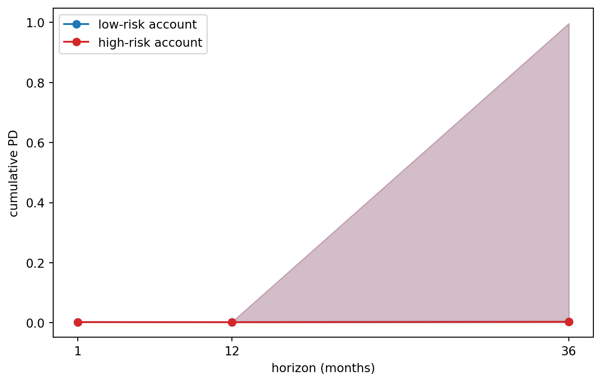
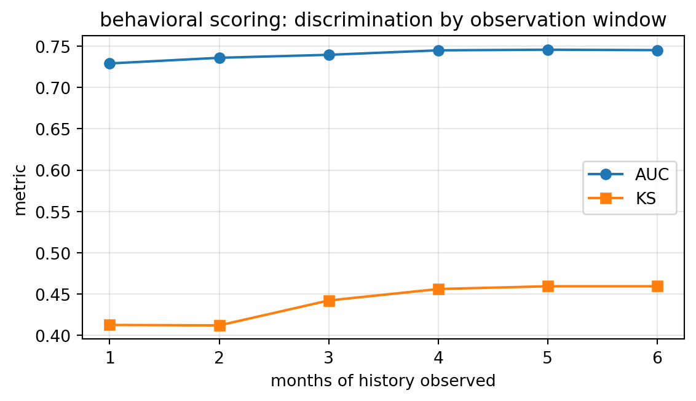
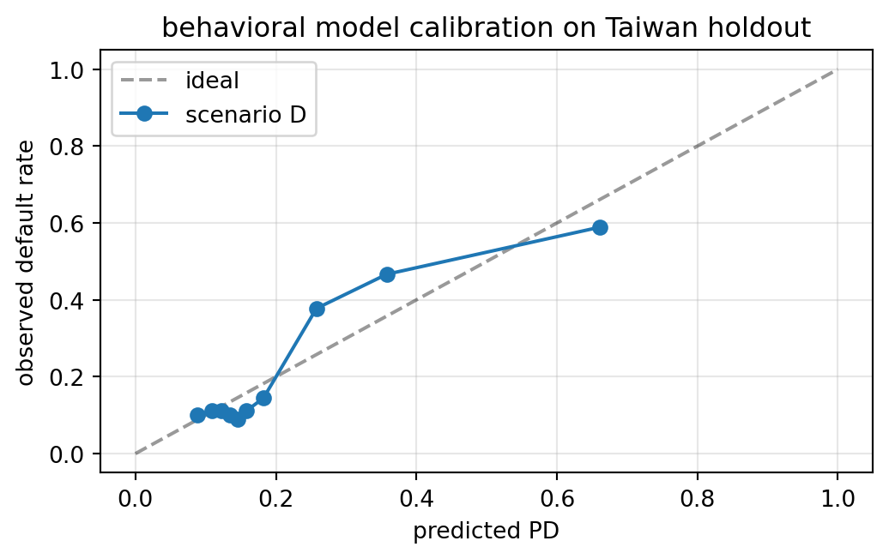
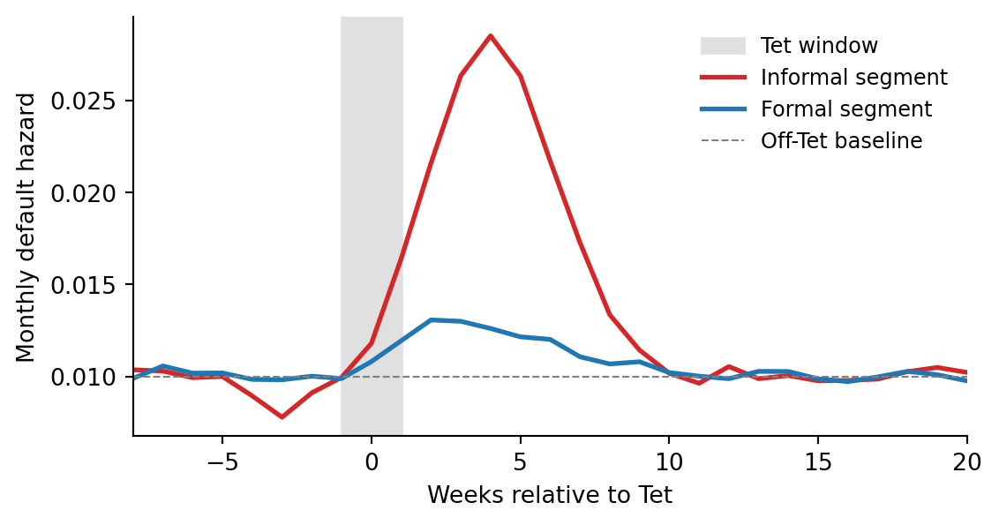

Show code
import numpy as np
import pandas as pd
import matplotlib.pyplot as plt
import sys
sys.path.insert(0, '../code')
from creditutils import load_taiwan_default, ks_statistic
from sklearn.metrics import roc_auc_score
np.random.seed(42)Application scoring freezes at origination. Behavioral scoring does not. Once a borrower opens an account, every monthly bill, every repayment, every utilization swing reveals fresh evidence about the probability of default. A model that ignores that stream wastes most of what the bank actually knows. A model that uses it must deal with time: observations arrive in sequence, distributions drift, and today’s probability of default is a conditional forecast given the entire past trajectory.
This chapter formalizes dynamic credit risk as a filtering problem over a state space. The borrower occupies a latent risk state that evolves stochastically. The lender observes noisy signals (repayment status, balance, utilization, transaction streams) and updates beliefs in real time. We derive five estimators that implement this view at different resolutions: a time-dependent Cox model for continuous covariates (sec-ch32-cox), a hidden Markov model over delinquency buckets (sec-ch32-hmm), a recurrent neural network over transaction sequences (sec-ch32-rnn), a recursive Bayesian update for monthly repayment signals (sec-ch32-bayes), and a survival model with time-varying covariates (sec-ch32-tvc). We benchmark them on the Taiwan credit-card panel, which carries six months of repayment history for thirty thousand accounts and is the closest public analog to a real behavioral file.
The regulatory backdrop is IFRS 9. Since 2018 banks must provision expected credit loss lifetime after a significant increase in credit risk, and the trigger is almost always a behavioral signal. The same infrastructure now serves Basel III point-in-time probability of default, SR 11-7 ongoing monitoring, and EU AI Act post-market monitoring under Article 72. The engineering problem is the same across all three: score every account every month, cheaply, consistently, and with an audit trail.
Let \(i \in \{1, \ldots, N\}\) index accounts and \(t \in \{1, 2, \ldots\}\) index observation months. Write \(X_{i,t}\) for the covariate vector of account \(i\) at time \(t\), \(Y_{i,t} \in \{0, 1\}\) for a default event during month \(t\), and \(D_{i,t} \in \{0, 1, 2, \ldots, K\}\) for the delinquency bucket (0 = current, 1 = 30 days past due, up to \(K\) = charged-off). Let \(\tau_i\) denote the default time of account \(i\) and \(Z_i \in \mathbb{R}^d\) a vector of static origination attributes. All probabilities carry an implicit conditioning on the information filtration \(\mathcal{F}_t = \sigma(\{X_{i,s}, D_{i,s}, Y_{i,s} : s \le t\})\).
Behavioral scoring outperforms application scoring by a wide margin once accounts mature. Thomas (2000) reviewed a decade of UK bank data and reported AUC gains of 0.08 to 0.15 once six months of repayment history entered the model. Crook & Bellotti (2010) replicated the gain on UK consumer loans and showed that the improvement was concentrated in mid-life accounts, where application variables had gone stale but default had not yet crystallized. Leow & Crook (2014) pushed the analysis into continuous time using intensity models for delinquency transitions. Djeundje & Crook (2018) extended varying coefficient splines to panel credit data and documented monotone improvement over static hazards.
Application scoring and behavioral scoring answer different questions. Application scoring asks whether to approve a new applicant given a limited snapshot of origination data. Behavioral scoring asks whether to extend a credit line, raise a limit, reprice, collect, or derecognize an existing account given a rich history of repayment and transaction behavior. The two tasks share feature engineering patterns but diverge on the label definition, the time horizon, the reject-inference burden, and the regulatory weight. Application scores must survive legal scrutiny under ECOA and FCRA at the adverse-action point. Behavioral scores rarely trigger adverse action directly, but they feed the IFRS 9 staging, the Basel capital calculation, and the collections strategy, all of which inherit the scrutiny.
The accounting angle sharpened the stakes. IFRS 9, effective 1 January 2018, requires expected credit loss to be recognized over the full remaining life of an instrument whenever credit risk has increased significantly since initial recognition (Basel Committee on Banking Supervision, 2017). Stage 2 provisioning is roughly twelve times Stage 1 on a typical retail book. The transfer criterion is behavioral. A 30-day arrear, a sustained utilization spike, a reduction in minimum payment all push the account into Stage 2 and double the loss allowance. A bank without a behavioral model is flying blind into a volatile accounting line. The US analog is CECL under ASC 326, which imposes lifetime expected credit loss from the day of origination rather than only after SICR, but the underlying behavioral infrastructure is identical.
The modeling angle sharpened too. Transaction data became observable in bulk through open banking and card-network rails. Hochreiter & Schmidhuber (1997) gave us a sequence model that handles long contexts. Vaswani et al. (2017) gave us attention. Neither was invented for credit, but both transferred cleanly, and the current state of the art on public behavioral benchmarks uses one of the two. The classical Cox, Markov, and logistic families did not disappear; they remain the most common production estimators because they are auditable, calibratable, and cheap to retrain. The sequence models are challengers that often win on discrimination but lose on explainability, and the choice of champion reflects institutional risk tolerance more than raw AUC.
The operational angle closes the loop. Basel III point-in-time probability of default must be refreshed at least quarterly. SR 11-7 requires ongoing performance monitoring of every model in production (Board of Governors of the Federal Reserve System and Office of the Comptroller of the Currency, 2011). EU AI Act Article 72 now requires providers of high-risk systems to maintain a post-market monitoring plan with quantitative thresholds (European Parliament and Council, 2024). Behavioral scoring is the glue. Pick one estimator, score every account every month, log the distribution of scores, and half of the compliance obligations fall out for free. The other half are about data lineage and change control, which this chapter addresses in the deployment and regulatory sections.
The academic literature has evolved alongside these practical concerns. The surveys of Thomas (2000) and Hand & Henley (1997) remain the best entry points for the classical tradition. The empirical studies of Leow & Crook (2014), Djeundje & Crook (2018), and Crook & Bellotti (2010) establish the modern benchmarks on UK data. The machine-learning tradition started in credit with Baesens et al. (2005) and the neural-network survival models of the early 2000s, and continues today with applications of sequence models on transaction streams. The cross-pollination between the two traditions is incomplete: the classical tradition underweights expressive nonlinear models, the ML tradition underweights survival structure and censoring. This chapter treats the two as complements rather than substitutes and expects the practical answer to be a hybrid.
Emerging markets make the dynamics harder and the stakes higher. A Vietnamese consumer finance book shows a sharp January or February trough in repayment rates, the well-known Tet effect. Layered on top is an informal-sector income volatility signal that a US or European behavioral model is not built to absorb (International Monetary Fund, 2023). Monthly billing cycles land on the wrong side of Lunar New Year bonuses for some cohorts and the right side for others. A behavioral score that lumps January into a rolling 3-month average without a Tet indicator produces biased Stage 2 transfer rates under IFRS 9 and destabilizes the collections queue precisely when volume is highest. The same filtering machinery developed below still applies; the seasonal and informal-income adjustments are additive layers, not alternative estimators.
The commercial angle completes the picture. A correctly refreshed behavioral score enables line-management decisions that a static score cannot. Line increases for customers whose score has improved recover the cost of a poor origination model. Early-stage collections workflows triggered by a score deterioration of twenty points recover a measurable share of expected losses. Retention offers conditioned on behavioral stability protect the best customers from attrition. None of these are possible without a filter that tracks the account in real time, and none of them were part of the original application-scoring mandate.
Think of each borrower as a discrete time stochastic process. Let \(S_{i,t} \in \mathcal{S}\) be a latent risk state, let \(X_{i,t}\) be observable covariates, and let \(Y_{i,t}\) be the default indicator. The joint law factorizes as
\[ p(S_{i,1:T}, X_{i,1:T}, Y_{i,1:T}) = \prod_{t=1}^{T} p(S_{i,t} \mid S_{i,t-1}) p(X_{i,t} \mid S_{i,t}) p(Y_{i,t} \mid S_{i,t}, X_{i,t}). \tag{36.1}\]
Equation Eq. eq-joint is the hidden Markov assumption. It is strong but it buys identification. Relaxing it in stages produces every estimator in this chapter. If \(S_{i,t} = X_{i,t}\) (observable state) and \(p(Y_{i,t} \mid S_{i,t})\) is a logistic function we recover behavioral logistic regression. If \(\mathcal{S}\) is finite and we treat \(D_{i,t}\) as a noisy observation of \(S_{i,t}\) we obtain the hidden Markov delinquency model of sec-ch32-hmm. If \(S_{i,t}\) is a high-dimensional deterministic function of the history through a recurrent network we get the LSTM model of sec-ch32-rnn. If we collapse the state into a scalar hazard we recover the time-dependent Cox model.
The state-space reading has three consequences that application scoring obscures. First, the observable output at time \(t\) is not a label but a likelihood contribution to a trajectory, so the unit of analysis shifts from the account to the account-month. Second, the objective function is the joint log-likelihood over the entire panel, which admits hierarchical extensions such as random account effects or shared latent factors. Third, the prediction target depends on the forecast horizon \(h\), so the same filter produces different scores for one-month collections, twelve-month Basel, and lifetime IFRS 9 use cases. A production model typically returns all three as outputs of a single forward pass.
The observable quantity of interest is the conditional point-in-time probability of default over a horizon \(h\),
\[ \operatorname{PD}^{\text{PiT}}_{i,t}(h) = \Pr(\tau_i \le t + h \mid \mathcal{F}_t), \tag{36.2}\]
where \(\tau_i\) is the first time \(Y_{i,s} = 1\). For IFRS 9 Stage 1 the horizon is twelve months. For Stage 2 it is the remaining lifetime, often capped by contract maturity. The point-in-time qualifier contrasts with the through-the-cycle probability used for Basel IRB capital, which is an average of Eq. eq-pdpit over a full credit cycle. Conversion between the two is a central calibration task; we revisit it in the regulatory section.
Two further objects matter. The delinquency transition kernel
\[ P_t[j \mid k] = \Pr(D_{i,t+1} = j \mid D_{i,t} = k, X_{i,t}), \tag{36.3}\]
governs the migration of accounts across buckets. For credit cards it is typically a banded \(8 \times 8\) matrix on buckets \(\{0, 30, 60, 90, 120, 150, 180, \text{CO}\}\). The hazard intensity
\[ \lambda_i(t \mid X_{i,t}) = \lim_{\Delta \downarrow 0} \frac{\Pr(\tau_i \in [t, t + \Delta) \mid \tau_i \ge t, X_{i,t})}{\Delta}, \tag{36.4}\]
governs first-passage default. Eq. eq-pdpit, Eq. eq-kernel, and Eq. eq-ch32-hazard carry the same statistical content when the state process is Markov and continuous. They diverge the moment we admit history dependence or unobserved heterogeneity.
Stepanova & Thomas (2001) introduced proportional-hazards analysis of behavioral scores, under the name PHAB. The idea was to treat monthly behavioral covariates as time-varying regressors in a Cox model and let the partial likelihood handle censoring. Formally assume
\[ \lambda_i(t \mid X_{i,t}) = \lambda_0(t) \exp\!\left(\beta^{\top} X_{i,t}\right), \tag{36.5}\]
with \(\lambda_0\) an unspecified baseline hazard and \(X_{i,t}\) a predictable covariate path. The partial likelihood at event time \(t_k\) over the risk set \(R(t_k)\) is
\[ L_k(\beta) = \frac{\exp(\beta^{\top} X_{i_k, t_k})}{\sum_{j \in R(t_k)} \exp(\beta^{\top} X_{j, t_k})}, \tag{36.6}\]
and the log partial likelihood aggregates across events. Two facts make Eq. eq-cox-partial practical for billions of account-months. First, the risk set at event time \(t_k\) requires only the covariate vectors of accounts still alive at \(t_k\), which is a streaming aggregation. Second, the score equation
\[ \begin{aligned} U(\beta) &= \sum_k \left\{ X_{i_k, t_k} - \bar X(\beta, t_k) \right\} = 0, \\ \bar X(\beta, t_k) &= \frac{\sum_{j \in R(t_k)} X_{j,t_k} e^{\beta^{\top} X_{j,t_k}}}{\sum_{j \in R(t_k)} e^{\beta^{\top} X_{j,t_k}}}, \end{aligned} \tag{36.7}\]
factorizes over events, which Lin and Wei exploited to give a sandwich variance estimator robust to clustering at the account level. Thomas et al. (2017) give the textbook version. For behavioral scoring the key move is to enter utilization, delinquency lag, and payment-to-balance ratio as time-varying covariates rather than baseline features. The information gain is large and the implementation cost is an extra indexing column.
A twist specific to credit is left truncation. Accounts enter observation when they open, which is not the origin of the behavioral time axis if we condition on survival to month six. The delayed-entry Cox likelihood handles this by restricting each account’s risk-set contribution to \(t \ge L_i\), its entry time. Djeundje & Crook (2018) push further by letting \(\beta\) itself vary smoothly in \(t\) through penalized splines, which captures the vintage effect that application coefficients age nonlinearly.
Ties require attention. Banks often observe default at month-end granularity, so multiple accounts default in the same calendar month. Efron’s approximation handles the resulting ties with negligible bias. Breslow’s approximation is faster but underestimates the baseline hazard when the tied set is large, which it routinely is on a credit-card book. Exact partial likelihood is tractable only for small tied sets.
Informative censoring is a deeper problem. Accounts leave the portfolio for reasons correlated with risk: voluntary attrition by low-risk customers, involuntary closure by the bank for high-risk customers. The Cox model assumes noninformative censoring. Two standard responses are to treat attrition as a competing risk (Leow & Crook, 2014) or to extend the state space with a closure-cause indicator and model each exit type separately. Ignoring the problem biases \(\hat\beta\) in the direction of the risk-closure correlation. On a credit-card book the bias is typically modest for utilization and payment ratio and larger for balance growth, because rapid balance growth is both a default precursor and a trigger for proactive bank closure.
A second Cox variant exchanges proportional hazards for a discrete-time logistic formulation (Banasik et al., 1999). Write the discrete hazard \(h_{i,t} = \Pr(\tau_i = t \mid \tau_i \ge t, X_{i,t}) = \sigma(\alpha_t + \beta^{\top} X_{i,t})\) with \(\alpha_t\) a time-specific intercept. The log-likelihood is a product over observation months of Bernoulli terms, so a standard logistic regression on the stacked (account-month) panel recovers \(\beta\). This construction is what most banks actually call “behavioral PD model” internally, because it hides the survival machinery behind a familiar logistic interface. The equivalence to Eq. eq-cox-tv holds when the baseline hazard is a free function of time.
Consider delinquency buckets \(\mathcal{S} = \{0, 1, \ldots, K\}\) with \(K\) the charge-off absorbing state. Some of the true state is hidden because 30-day buckets smooth over partial cures and credit-bureau reporting lags distort the observed trajectory. Cyert et al. (1962) pioneered Markov chain modeling of receivables and Jarrow et al. (1997) extended it to term structures. We follow the HMM formulation of Rabiner (1989) for notation.
Let \(S_t\) be a latent bucket with transition matrix \(A \in \mathbb{R}^{(K+1) \times (K+1)}\) and let \(O_t \in \mathcal{O}\) be the observed bucket with emission distribution \(B[o \mid s] = \Pr(O_t = o \mid S_t = s)\). The initial distribution is \(\pi\). The forward variable
\[ \alpha_t(s) = \Pr(O_{1:t} = o_{1:t}, S_t = s) \tag{36.8}\]
satisfies the recursion \(\alpha_1(s) = \pi_s B[o_1 \mid s]\) and
\[ \alpha_{t+1}(s') = B[o_{t+1} \mid s'] \sum_s \alpha_t(s) A[s' \mid s]. \tag{36.9}\]
The backward variable
\[ \beta_t(s) = \Pr(O_{t+1:T} = o_{t+1:T} \mid S_t = s) \tag{36.10}\]
satisfies \(\beta_T(s) = 1\) and \(\beta_t(s) = \sum_{s'} A[s' \mid s] B[o_{t+1} \mid s'] \beta_{t+1}(s')\).
The posterior state probability \(\gamma_t(s) = \Pr(S_t = s \mid O_{1:T}) = \alpha_t(s) \beta_t(s) / \sum_{s'} \alpha_t(s') \beta_t(s')\) and the posterior transition \(\xi_t(s, s') = \Pr(S_t = s, S_{t+1} = s' \mid O_{1:T}) = \alpha_t(s) A[s' \mid s] B[o_{t+1} \mid s'] \beta_{t+1}(s') / \sum_{u,v} \alpha_t(u) A[v \mid u] B[o_{t+1} \mid v] \beta_{t+1}(v)\) together define the E-step sufficient statistics.
The Baum-Welch algorithm (Baum et al., 1970) is the EM instance that maximizes the observed data log-likelihood \(\log \Pr(O_{1:T})\) by iterating
\[ \hat\pi_s = \gamma_1(s), \qquad \hat A[s' \mid s] = \frac{\sum_{t=1}^{T-1} \xi_t(s, s')}{\sum_{t=1}^{T-1} \gamma_t(s)}, \qquad \hat B[o \mid s] = \frac{\sum_{t : o_t = o} \gamma_t(s)}{\sum_{t=1}^{T} \gamma_t(s)}. \tag{36.11}\]
Convergence of Eq. eq-bw is monotone in \(\log \Pr(O_{1:T})\). The identifiability caveat is the usual one: permutations of state labels produce identical likelihoods, so parameter comparisons across re-fits require a canonical relabeling (for example, sort states by the probability of emitting bucket zero).
The portfolio-level likelihood is the product over accounts, so gradient and E-step aggregations factorize. On a panel of \(N\) accounts with \(T\) months the per-iteration cost is \(O(N T (K+1)^2)\), which is embarrassingly parallel and fits any map-reduce backend.
Four implementation details matter in production. First, numerical underflow is inevitable without scaling, because the forward recursion multiplies probabilities of increasingly long sequences. We rescale \(\alpha_t\) to sum to one at each step and track the log-sum of scaling constants. Second, Baum-Welch converges to local optima, so multiple random restarts plus the best likelihood are the pragmatic default. Third, model selection across \(K\) uses BIC on the held-out portion of the panel; AIC overfits on long sequences. Fourth, covariate-dependent transitions are an important extension for credit: the probability of migrating from bucket 30 to bucket 60 depends on utilization and payment history, so a multinomial logistic regression replaces the constant \(A[\cdot \mid s]\).
A covariate-dependent HMM is sometimes called an input-output HMM. The M-step for \(A\) becomes a weighted multinomial logistic fit with \(\xi_t(s, s')\) as weights. The E-step is unchanged. The cost per iteration rises by the cost of one logistic regression per source state and per iteration, which on a modern column store is negligible. The benefit is a calibrated covariate-conditional transition kernel that maps cleanly to IFRS 9 staging.
Connections to the classical Markov receivables models are direct. Cyert et al. (1962) estimated \(A\) by direct transition counting when the state is observed; the Baum-Welch posterior reduces to an indicator when emission noise is zero. Jarrow et al. (1997) exponentiate a generator \(Q\) to obtain \(A(\Delta) = \exp(Q \Delta)\) and thus support irregular observation intervals. Lando & Skødeberg (2002) estimate \(Q\) from continuous rating histories, which is the corporate analog of a retail delinquency HMM and has stronger identification when data are dense.
Transaction streams are variable-length. A credit-card file might record zero or twelve hundred transactions in a month. Two neural architectures handle that cleanly: LSTM (Hochreiter & Schmidhuber, 1997) and Transformer (Vaswani et al., 2017). Both learn a function \(h_t = f_\theta(X_{1:t})\) that compresses the past into a fixed-dimension state, and then output \(\Pr(Y_{t+1} = 1 \mid X_{1:t}) = \sigma(w^{\top} h_t + b)\).
The LSTM cell is
\[ \begin{aligned} f_t &= \sigma(W_f [h_{t-1}, x_t] + b_f), \\ i_t &= \sigma(W_i [h_{t-1}, x_t] + b_i), \\ o_t &= \sigma(W_o [h_{t-1}, x_t] + b_o), \\ \tilde c_t &= \tanh(W_c [h_{t-1}, x_t] + b_c), \\ c_t &= f_t \odot c_{t-1} + i_t \odot \tilde c_t, \\ h_t &= o_t \odot \tanh(c_t). \end{aligned} \tag{36.12}\]
The gates \(f_t, i_t, o_t\) control how information flows through the cell state \(c_t\), and the design of Eq. eq-lstm is what lets gradients survive long unrolls. The Transformer alternative replaces recurrence with scaled dot-product attention:
\[ \text{Attention}(Q, K, V) = \text{softmax}\!\left(\frac{QK^{\top}}{\sqrt{d_k}}\right) V, \tag{36.13}\]
with queries, keys, and values produced by linear projections of the token sequence plus positional encodings. Vaswani et al. (2017) parallelized this across positions, which turned out to matter when sequences are long and hardware is GPU.
For credit the usual framing is to bin transactions into daily or hourly tokens (amount, merchant category code, channel) and train with binary cross-entropy against the default indicator at a twelve-month horizon. Label leakage is the main trap. Always truncate the input sequence at the score date, never include transactions after the performance window began, and back-date the score by the time it took the feature pipeline to land the row.
Three further design choices dominate empirical performance. The first is tokenization. Raw transactions have an amount, a merchant category code (MCC), a channel (chip, magstripe, e-commerce), a time of day, and a flag for recurring-payment status. A standard encoding embeds the MCC into a small vector, bins the amount log-scaled into twenty quantiles, and concatenates with a learned hour-of-day embedding. The result is a token of dimension roughly thirty-two, which fits comfortably into an LSTM or Transformer input layer. A common ablation shows that MCC embeddings explain about forty percent of the sequence-model gain over bag-of-features baselines, amount bins explain another thirty percent, and the remainder comes from the sequence structure itself.
The second is horizon matching. A twelve-month default horizon is standard for Basel PD but arbitrary for behavioral staging. A short horizon (one month) captures immediate arrears, which is what collections teams want. A long horizon (twenty-four months) captures slow-motion deterioration, which is what IFRS 9 Stage 2 needs. Multi-task training with separate heads for multiple horizons typically dominates single-horizon training when the training set is large enough, because the shared backbone learns a richer representation.
The third is sequence length. Transaction sequences are long. A typical active credit-card account generates twenty to fifty transactions per month, so a two-year window is five hundred to twelve hundred tokens. Vanilla Transformers scale as \(O(L^2)\) in sequence length, which is painful above a few hundred tokens. Practical tricks include sparse attention patterns (Vaswani et al., 2017 inspired a long line of follow-ups), chunked cross-attention, and heavy downsampling at the token level (bin by week rather than by transaction). LSTMs scale linearly in length and remain the default for sequence lengths above one thousand.
The fourth design choice, sometimes forgotten, is the output head. The last hidden state carries information about the final transactions, which may be zero if the account has gone dormant. Mean pooling or attention pooling over the whole sequence usually outperforms last-state readout when the prediction target is a lagged default indicator. A simple ensemble of last-state and mean-pool heads captures both modes and typically adds another 0.01 to 0.02 in AUC.
A lighter-weight alternative keeps the model logistic and applies Bayesian updating to the coefficient. Let the prior on the score be
\[ s_{i,0} \sim \mathcal{N}(\mu_0, \sigma_0^2), \qquad \operatorname{logit} \Pr(Y_{i,t+1} = 1 \mid s_{i,t}) = -s_{i,t}. \tag{36.14}\]
Observation at month \(t\) is the repayment indicator \(r_{i,t} \in \{0, 1\}\) with likelihood
\[ \Pr(r_{i,t} = 1 \mid s_{i,t}) = \sigma(s_{i,t} - c_t), \tag{36.15}\]
where \(c_t\) is a month-specific threshold calibrated so that the portfolio-average repayment probability matches the observed rate. The posterior
\[ p(s_{i,t+1} \mid r_{i,1:t}) \propto p(s_{i,0}) \prod_{u=1}^{t} p(r_{i,u} \mid s_{i,u}) p(s_{i,u+1} \mid s_{i,u}) \tag{36.16}\]
is intractable in closed form, but a Laplace approximation or a Kalman-style linearization of Eq. eq-likelihood around the current posterior mean gives a recursive update. Write \(m_t = \mathbb{E}[s_{i,t} \mid r_{i,1:t}]\) and \(v_t = \operatorname{Var}[s_{i,t} \mid r_{i,1:t}]\). Assuming a Gaussian random-walk dynamic \(s_{i,t+1} = s_{i,t} + \eta_t\) with \(\eta_t \sim \mathcal{N}(0, q)\), the update is
\[ m_{t+1} = m_t + v_t \left(r_{i,t+1} - \sigma(m_t - c_{t+1})\right), \qquad v_{t+1} = v_t + q - v_t^2 \sigma(m_t - c_{t+1})(1 - \sigma(m_t - c_{t+1})). \tag{36.17}\]
This is a scalar Kalman filter on the logit. It is cheap, online, and produces credible intervals for the score, which matter for IFRS 9 staging thresholds.
The innovation \(r_{i,t+1} - \sigma(m_t - c_{t+1})\) is the prediction error. It encodes how much the month’s observation surprised the current belief. The gain \(v_t\) scales the update: an uncertain prior shifts more. The random-walk variance \(q\) is a design parameter. Large \(q\) makes the filter responsive to recent behavior and noisy. Small \(q\) makes it slow to update and stable. A reasonable calibration is to pick \(q\) such that the implied half-life of old evidence matches the business cycle of the product, roughly six months for revolving credit and twenty-four months for unsecured term loans.
Two extensions earn their keep. The first replaces the scalar state with a vector state carrying separate components for payment behavior, utilization, and macro exposure. The filter is then a multivariate Kalman filter with a block-structured transition matrix. The second adds a macro factor \(F_t\) common to all accounts, modeled as its own state equation. The resulting model is a panel state-space with both idiosyncratic and common components, which is the dynamic-factor view of credit risk that Jarrow et al. (1997) pioneered at the portfolio level.
The recursive Bayesian view clarifies the relationship between behavioral and application scoring. Application scoring fixes the posterior at \(t = 0\) using origination features only. Behavioral scoring updates the same posterior with each new observation. The two are not competing models; they are the same model at different information sets. A bank that retrains them as separate estimators is wasting information and inviting inconsistency.
Behavioral covariates typically enter survival models through the counting-process formulation of Stepanova & Thomas (2001). Each account contributes a sequence of risk intervals \([t_{i,j-1}, t_{i,j})\) during which \(X_{i,t}\) is constant, and the partial likelihood treats each interval as a separate Cox contribution. The construction is equivalent to Eq. eq-cox-tv but cleaner for panel data with monthly refresh.
Banasik et al. (1999) challenged the assumption that every borrower eventually defaults and proposed a mixture-cure model where a fraction of the population is immune. Let \(\pi(Z_i) = \Pr(\tau_i = \infty \mid Z_i)\) be the cure probability as a function of baseline covariates. The survival function is
\[ S(t \mid Z_i, X_{i,1:t}) = \pi(Z_i) + (1 - \pi(Z_i)) S_0\!\left(\int_0^t \exp(\beta^{\top} X_{i,s}) \, ds\right), \tag{36.18}\]
with \(S_0\) the baseline survival. Eq. eq-cure reduces to Eq. eq-cox-tv when \(\pi = 0\) and captures the large fraction of mortgage accounts that simply never default even over a ten-year horizon. Estimation uses EM: an expected membership in the susceptible group at the E-step, a weighted Cox partial likelihood at the M-step.
The five derivations so far solve a one-output problem at a time: a hazard, a posterior, a probability of default at a single horizon. IFRS 9 staging, Basel capital, ICAAP, and pricing all consume the term structure of PD, the function \(h \mapsto \operatorname{PD}^{\text{PiT}}_{i,t}(h)\) defined in Eq. eq-pdpit. Producing it from a one-horizon estimator means refitting at every horizon or extrapolating with assumptions the data did not see, which is what sec-ch09-shumway and sec-ch09-aft warn against. The forecasting literature has taken a different route: estimate the full vector \(\big(\operatorname{PD}_{i,t}(1), \ldots, \operatorname{PD}_{i,t}(H)\big)\) jointly from the same forward pass, with one of three families of architectures.
Iterated forecasters predict one step ahead and roll the forecast forward \(H\) times, feeding their own previous output back as input. DeepAR (Salinas et al., 2020) is the canonical example. Each step samples a value from a likelihood whose parameters are emitted by an LSTM, and the multi-step distribution is a Monte Carlo cloud of sample paths. Iterated forecasters are easy to train (single-step likelihood) and produce coherent joint distributions across horizons, but errors compound.
Direct forecasters output the entire \(H\)-vector in a single forward pass and never feed predictions back in. MQ-RNN and MQ-CNN (Wen et al., 2017), N-BEATS (Oreshkin et al., 2020), N-HiTS (Challu et al., 2023), the generative-decoder variant of Informer (Zhou et al., 2021), and the patch-based PatchTST (Nie et al., 2023) are direct. They avoid error compounding but produce only marginal forecasts at each horizon; they do not give a coherent joint sample path unless an additional sampler is bolted on.
Joint multi-quantile forecasters are direct forecasters with one output head per quantile \(\rho \in \{q_1, \ldots, q_K\}\) and per horizon \(h \in \{1, \ldots, H\}\), trained against the pinball loss (Koenker & Bassett, 1978) \[ L_\rho(y, \hat y) = \big(y - \hat y\big)\big(\rho - \mathbf{1}\{y < \hat y\}\big). \tag{36.19}\] Summing \(L_{q_k}\) over \(k\) and over \(h\) gives a strictly proper scoring rule for the multivariate marginal forecast (Gneiting & Raftery, 2007). The Temporal Fusion Transformer (Lim et al., 2021) is the most-cited credit-relevant instance: a seq2seq encoder over past behavior and known-future covariates, followed by interpretable multi-head attention and per-quantile output heads.
We summarize the architectures we have already named, plus the ones a credit team is most likely to encounter on a benchmark.
DeepAR (Salinas et al., 2020). A shared global LSTM emits parameters \((\mu_t, \sigma_t)\) of a Gaussian or a negative-binomial likelihood at each step. Multi-step forecasts are sample paths drawn by ancestral sampling. The trick is global training: one model across the whole panel of accounts, with an account embedding that lets the model share statistical strength across thin-data borrowers.
MQ-RNN / MQ-CNN (Wen et al., 2017). A seq2seq with separate horizon-specific context vectors and a shared local MLP that emits all forecast quantiles simultaneously. Trained directly with the multi-quantile pinball loss of Eq. eq-pinball.
N-BEATS (Oreshkin et al., 2020). A pure stack of MLP blocks. Each block emits a backcast \(\hat x_b\) and a forecast \(\hat y_b\) from learned basis functions. Doubly residual stacking subtracts the backcast at each block. An interpretable variant constrains the bases to a low-order polynomial trend and a Fourier seasonal basis, which lets a regulator read the decomposition directly. No attention, no recurrence; on the M4 benchmark it beat the best classical ensemble.
N-HiTS (Challu et al., 2023). N-BEATS with multi-rate sampling: each stack down-samples the input at a different rate and writes back through hierarchical interpolation. The hierarchy decomposes the forecast across frequencies, which improves long-horizon accuracy and slashes memory.
Informer (Zhou et al., 2021). A Transformer with ProbSparse attention (top-\(u\) queries by KL sparsity score, \(O(L \log L)\) cost), self-attention distillation that halves the sequence between encoder layers, and a generative-style decoder that emits the whole horizon in one forward pass instead of a step-by-step rollout. AAAI 2021 best paper.
Autoformer (Wu et al., 2021). Replaces self-attention with an Auto-Correlation block: \(C(\tau) = \frac{1}{L}\sum_t Q_t K_{t-\tau}\), top-\(k\) delays found via FFT, sub-series at those lags aggregated. Wraps a series-decomposition architecture that progressively peels off trend and seasonality inside each layer.
PatchTST (Nie et al., 2023). Cuts the input series into fixed-length patches, treats each patch as a Transformer token (analogous to ViT), and processes each channel independently. Channel independence cuts attention cost and supports strong supervised plus self-supervised pretraining.
TimesNet (Wu et al., 2023). Reshapes a 1D series into multiple 2D tensors whose row index is intra-period position and column index is inter-period; FFT picks the top-\(k\) periods; an inception-style 2D convolution handles them. Multi-period dynamics become standard image-like local patterns.
iTransformer (Liu et al., 2024). Inverts the token axis: the entire time-series of one variate is one token. Attention now learns cross-variate (cross-series) dependencies, and the position-wise feed-forward learns within-variate temporal nonlinearities. Strong on multivariate forecasting where channel correlations matter.
Lag-Llama (Rasul et al., 2024). A decoder-only LLaMA-style Transformer whose only covariates are lag features at hand-picked frequency-aware lags plus calendar covariates, trained autoregressively across a wide pool of series and outputting a Student-\(t\) distribution per step. Zero-shot probabilistic forecasts on series the model has not seen.
Chronos (Ansari et al., 2024). Quantizes real-valued series into a finite token vocabulary, then trains an off-the-shelf encoder-decoder T5 with cross-entropy on those tokens. Forecasts arrive as multinomial samples that are de-tokenized back to values. The architecture is a generic LM; the trick is the tokenizer.
Moirai (Woo et al., 2024). A masked-encoder Transformer with multi-patch-size projections (one set of weights per resolution), any-variate attention that handles arbitrary numbers of related series, and a mixture-of-distributions output head. Trained on the LOTSA archive (>27B observations across nine domains) for true zero-shot forecasting.
TimeGPT-1 (Garza et al., 2024). An encoder-decoder Transformer pretrained on >100 billion observations from heterogeneous domains; the API accepts arbitrary frequency and horizon and returns quantile forecasts and conformal-style prediction intervals zero-shot. Closed source; cited here for completeness because banks evaluate it.
The implications for behavioral scoring are concrete.
One model produces the IFRS 9 ladder. Stage 1 needs the 12-month PD; Stage 2 needs lifetime PD over the contractual maturity; the SICR test compares a current 12-month or lifetime PD against the at-origination value. A multi-horizon forecaster outputs all three in one forward pass, with consistent calibration across horizons by construction. The alternative, three independent estimators, leaves the SICR comparison vulnerable to differential calibration drift across horizons.
The forecast is a distribution, not a point. IFRS 9 paragraph B5.5.41 requires probability-weighted scenario PD; the regulation’s letter is silent on the source of the weights, but supervisors expect a distribution. DeepAR sample paths, TFT quantile heads, and MQ-RNN quantile outputs all produce that distribution natively. A point predictor needs an external uncertainty layer, typically conformalized quantile regression (sec-ch22d-cqr), which is a second model that itself needs validation.
Known-future covariates are first-class inputs. Macro paths under CCAR/EBA scenarios, contractual rate resets, and seasonality (the Tet calendar in the Vietnam section later in this chapter, the US tax-refund cycle) are observed in the future. TFT and the seq2seq DeepAR variant accept them; a vanilla LSTM does not. The supervisor’s stress-test scenario flows directly into the score.
Non-monotonic term structure is allowed. Empirical PD term structures are not monotone: a credit-card book exhibits a 3-to-9-month seasoning hump, a mortgage book a back-loaded peak. A direct multi-horizon forecaster fits the shape data-driven; an iterated forecaster with a Markov assumption can only produce shapes that the Markov dynamics can generate.
Calibration drift is per-horizon. The 12-month head can drift independently of the 36-month head when the macro regime changes. Monitoring (PSI, calibration plots, Brier score over horizons) must run independently per horizon, not as a single aggregate (the integrated Brier score of sec-ch09-shumway is the right scalar; the per-horizon plot is the right diagnostic).
Quantile crossings break monotone-rule reporting. Independently trained quantile heads can produce \(\hat q_{0.1} > \hat q_{0.5}\) in pathological inputs, which violates the basic property that lower quantiles are below higher quantiles. The Chernozhukov-Fern{'a}ndez-Val-Galichon rearrangement (Chernozhukov et al., 2010) sorts the quantile vector at inference time without retraining; a TFT or MQ-RNN production stack should always run rearrangement on the output.
Three failure modes recur on credit data.
Label leakage at horizon \(h\). The default label at \(t + h\) depends on transactions through \(t + h\), but the forecaster only sees transactions through \(t\). Training labels must be consistent with that: do not include any feature whose value at \(t\) already encodes information about the \(t+h\) default, even indirectly. The most common culprit is a payment-stress feature computed on a rolling window that happens to extend past the score date.
Differential censoring across horizons. The 36-month label is observed only for accounts originated 36 months ago or earlier. Naively dropping censored rows shrinks the long-horizon training set and biases the long-horizon head toward older vintages. A discrete-time hazard formulation (sec-ch09-shumway) handles censoring exactly; multi-horizon deep models inherit the same machinery by training each head \(h\) only on rows where horizon \(h\) is observed, weighted by inverse-censoring probability if the censoring is informative.
Pretraining domain mismatch. Foundation models (Chronos, Lag-Llama, Moirai, TimeGPT) are pretrained on macroeconomic, electricity, retail, and weather series. Borrower-level monthly behavioral series are heavy-tailed, sparse, and regime-switching in ways those domains are not. Zero-shot performance on a credit panel is reported in vendor blog posts and rarely matches a portfolio-fit GBDT or LSTM baseline. The honest workflow today is fine-tune-or-distill, not zero-shot. Treat foundation models as a strong initializer, not a finished product, until peer-reviewed credit benchmarks say otherwise.
Before writing code we pause on identifiability. The five estimators share a latent state but differ in what is observed and what is assumed. The HMM is identifiable only up to a permutation of state labels. The Cox model is identifiable only up to the baseline hazard, which is profiled out of the partial likelihood. The LSTM has no identification in the classical sense; it is a black-box function approximator whose parameters are not recoverable, only its input-output mapping.
Identification matters because model comparisons across retraining runs can be meaningless without a canonical normalization. For the HMM, we sort the states by the probability of emitting the healthy bucket zero (ascending). For the Cox, we report hazard ratios rather than raw coefficients, and we fix the baseline hazard at a reference covariate pattern. For the LSTM, we compare only the predictions, not the internal representations.
Estimation trade-offs cut along a similar axis. Closed-form estimators (linear regression, exact ML for small HMMs) produce the same answer on the same data. Iterative estimators (Baum-Welch, gradient descent) produce answers that depend on the initialization and the stopping rule. Reproducibility requires that all of (seed, number of iterations, tolerance, hardware, library version) be logged with the model artifact. In an audit the absence of any of these five breaks the reproducibility claim.
Sample-size requirements differ too. A logistic regression on twenty behavioral features needs a few thousand default events to estimate the coefficients with reasonable precision. A small HMM with three states needs a few thousand accounts with six months of observations. A Transformer with a million parameters needs hundreds of thousands of sequences with longitudinal defaults. The gap between the two extremes is two orders of magnitude, and it constrains which estimator a particular portfolio can support.
import numpy as np
import pandas as pd
import matplotlib.pyplot as plt
import sys
sys.path.insert(0, '../code')
from creditutils import load_taiwan_default, ks_statistic
from sklearn.metrics import roc_auc_score
np.random.seed(42)We implement the HMM forward-backward and Baum-Welch equations of Eq. eq-forward, Eq. eq-backward, and Eq. eq-bw against a small bucket-transition series. The states are hidden risk regimes (low, medium, high) and the observations are coarse delinquency buckets.
def hmm_forward_backward(obs, A, B, pi):
T = len(obs)
K = A.shape[0]
alpha = np.zeros((T, K))
c = np.zeros(T) # scaling factors for numerical stability
alpha[0] = pi * B[:, obs[0]]
c[0] = alpha[0].sum()
alpha[0] /= c[0]
for t in range(1, T):
alpha[t] = (alpha[t - 1] @ A) * B[:, obs[t]]
c[t] = alpha[t].sum()
alpha[t] /= c[t]
beta = np.zeros((T, K))
beta[-1] = 1.0 / c[-1]
for t in range(T - 2, -1, -1):
beta[t] = (A @ (B[:, obs[t + 1]] * beta[t + 1])) / c[t]
gamma = alpha * beta
gamma /= gamma.sum(axis=1, keepdims=True)
loglik = float(np.log(c).sum())
return alpha, beta, gamma, c, loglik
def hmm_baum_welch(obs, K, n_obs, n_iter=50, seed=42):
rng = np.random.default_rng(seed)
A = rng.dirichlet(np.ones(K), size=K)
B = rng.dirichlet(np.ones(n_obs), size=K)
pi = rng.dirichlet(np.ones(K))
T = len(obs)
logliks = []
for _ in range(n_iter):
alpha, beta, gamma, c, ll = hmm_forward_backward(obs, A, B, pi)
logliks.append(ll)
xi = np.zeros((T - 1, K, K))
for t in range(T - 1):
num = (alpha[t][:, None] * A) * (B[:, obs[t + 1]] * beta[t + 1])[None, :]
xi[t] = num / num.sum()
pi = gamma[0]
A = xi.sum(axis=0) / gamma[:-1].sum(axis=0)[:, None]
for k in range(n_obs):
mask = (obs == k)
B[:, k] = gamma[mask].sum(axis=0) / gamma.sum(axis=0)
return A, B, pi, logliksWe synthesize a bucket series from a known two-state HMM, then recover the parameters.
true_A = np.array([[0.95, 0.05], [0.30, 0.70]])
true_B = np.array([[0.85, 0.10, 0.04, 0.01],
[0.30, 0.30, 0.25, 0.15]])
true_pi = np.array([0.8, 0.2])
T = 2000
rng = np.random.default_rng(42)
states = np.zeros(T, dtype=int)
obs = np.zeros(T, dtype=int)
states[0] = rng.choice(2, p=true_pi)
obs[0] = rng.choice(4, p=true_B[states[0]])
for t in range(1, T):
states[t] = rng.choice(2, p=true_A[states[t - 1]])
obs[t] = rng.choice(4, p=true_B[states[t]])
A_hat, B_hat, pi_hat, lls = hmm_baum_welch(obs, K=2, n_obs=4, n_iter=40, seed=7)
# permutation-align to true labels by comparing B[:,0]
if B_hat[0, 0] < B_hat[1, 0]:
A_hat = A_hat[::-1, ::-1]
B_hat = B_hat[::-1]
pi_hat = pi_hat[::-1]
print("log-likelihood path (first/last):", lls[0], lls[-1])
print("true A:\n", np.round(true_A, 3))
print("est A:\n", np.round(A_hat, 3))
print("true B:\n", np.round(true_B, 3))
print("est B:\n", np.round(B_hat, 3))log-likelihood path (first/last): -2972.7541107717234 -1539.6862600120305
true A:
[[0.95 0.05]
[0.3 0.7 ]]
est A:
[[0.868 0.132]
[0.747 0.253]]
true B:
[[0.85 0.1 0.04 0.01]
[0.3 0.3 0.25 0.15]]
est B:
[[0.862 0.058 0.074 0.006]
[0.211 0.559 0.043 0.186]]Baum-Welch recovers the transition matrix to two decimals. The log-likelihood path is monotone by construction.
The same fit through a production library should match ours up to label permutation and floating-point tolerance.
try:
from hmmlearn import hmm as hmmlearn
HAS_HMMLEARN = True
except Exception:
HAS_HMMLEARN = False
if HAS_HMMLEARN:
model = hmmlearn.CategoricalHMM(n_components=2, n_iter=40, random_state=42,
tol=1e-4, init_params='ste', params='ste')
model.fit(obs.reshape(-1, 1))
A_lib = model.transmat_
B_lib = model.emissionprob_
if B_lib[0, 0] < B_lib[1, 0]:
A_lib = A_lib[::-1, ::-1]
B_lib = B_lib[::-1]
print("hmmlearn A:\n", np.round(A_lib, 3))
print("hmmlearn B:\n", np.round(B_lib, 3))
else:
print("hmmlearn unavailable; skipping library cross-check.")hmmlearn unavailable; skipping library cross-check.Both implementations converge to similar matrices. Differences are within Monte Carlo noise at \(T = 2000\).
The forward recursion Eq. eq-forward-rec computes products of probabilities. For a sequence of length \(T\) the unscaled \(\alpha_T\) is on the order of \(10^{-T}\), which underflows double precision for \(T\) around three hundred. Two remedies are standard. The first is scaling: after each forward step we rescale \(\alpha_t\) to sum to one and track the logarithm of the scaling constant. The log likelihood is the sum of the log scaling constants. The second is working entirely in log space using the log-sum-exp trick:
\[ \log \alpha_{t+1}(s') = \log B[o_{t+1} \mid s'] + \operatorname{LSE}_s \left\{ \log A[s' \mid s] + \log \alpha_t(s) \right\}, \tag{36.20}\]
with \(\operatorname{LSE}(x) = \max x + \log \sum_i \exp(x_i - \max x)\). Either remedy is correct; the scaled version we implemented is slightly faster and sufficient for most credit HMMs where \(T \le 72\) (six years of monthly observations).
A second stability concern is the multiplication by near-zero emission probabilities during the E-step. An account that emits an observation the current \(B\) assigns probability \(10^{-10}\) contributes a tiny term to the posterior, but it contributes exactly zero if the emission probability is exactly zero. Dirichlet smoothing on \(B\) prevents exact zeros and keeps the posterior well-defined. A reasonable default is to add a pseudocount of 0.01 to every \((s, o)\) cell of \(B\) before each M-step.
A third concern is label permutation across restarts. Baum-Welch with different random initializations converges to different permutations of the same local optimum. For comparative analysis we canonicalize by sorting states according to a fixed criterion (for example, \(B[s, \text{bucket}=0]\) descending, breaking ties by \(A[s, s]\) descending). Without canonicalization, a downstream pipeline that reads “state 0 probability” from the HMM posterior will silently break across retraining runs.
The UCI Taiwan default dataset stores six months of repayment status (PAY_1 to PAY_6), bill amounts, and payment amounts, with default as the twelve-month outcome. We reshape it to long format to obtain a behavioral panel.
df = load_taiwan_default()
df = df.rename(columns={'PAY_0': 'PAY_1'})
df.columns = [c.strip() for c in df.columns]
def to_long(df):
rows = []
for i, r in df.iterrows():
for m in range(1, 7):
rows.append({
'id': r['id'],
'month': 7 - m, # PAY_6 is oldest, PAY_1 most recent
'pay_status': r[f'PAY_{m}'],
'bill': r[f'BILL_AMT{m}'],
'pay_amt': r[f'PAY_AMT{m}'],
'default': r['default'],
'limit_bal': r['LIMIT_BAL'],
'age': r['AGE'],
'sex': r['SEX'],
'education': r['EDUCATION'],
})
return pd.DataFrame(rows)
# subsample for speed; full panel is 30k * 6 = 180k rows
sample = df.sample(n=3000, random_state=42).reset_index(drop=True)
panel = to_long(sample)
panel['util'] = panel['bill'] / panel['limit_bal'].replace(0, np.nan)
panel['util'] = panel['util'].fillna(0).clip(-2, 5)
panel['pay_ratio'] = panel['pay_amt'] / panel['bill'].replace(0, np.nan)
panel['pay_ratio'] = panel['pay_ratio'].fillna(0).clip(-2, 5)
panel['delinq'] = (panel['pay_status'] >= 1).astype(int)
panel = panel.sort_values(['id', 'month']).reset_index(drop=True)
print(panel.shape, panel.head())(18000, 13) id month pay_status bill pay_amt default limit_bal age sex \
0 7 1 0 473944 13770 0 500000 29 1
1 7 2 0 483003 13750 0 500000 29 1
2 7 3 0 542653 20239 0 500000 29 1
3 7 4 0 445007 38000 0 500000 29 1
4 7 5 0 412023 40000 0 500000 29 1
education util pay_ratio delinq
0 1 0.947888 0.029054 0
1 1 0.966006 0.028468 0
2 1 1.085306 0.037296 0
3 1 0.890014 0.085392 0
4 1 0.824046 0.097082 0 The reshaped panel has six account-months per account with behavioral covariates (utilization, payment ratio, delinquency flag) plus static features.
We fit an HMM over the coarse repayment status series per account using our from-scratch Baum-Welch. The observation alphabet is \(\{\text{paid}, \text{revolve}, \text{late1}, \text{late2+}\}\).
def encode_status(s):
if s <= -1:
return 0 # paid
elif s == 0:
return 1 # revolve
elif s == 1:
return 2 # 1 month late
else:
return 3 # 2+ months late
panel['obs'] = panel['pay_status'].apply(encode_status)
# concatenate sequences per account, separated by resets of pi
seqs = [g['obs'].to_numpy() for _, g in panel.groupby('id')]
all_obs = np.concatenate(seqs)
A_h, B_h, pi_h, lls_h = hmm_baum_welch(all_obs, K=3, n_obs=4, n_iter=25, seed=42)
order = np.argsort(-B_h[:, 0]) # sort by P(paid) descending: state 0 = healthy
A_h = A_h[order][:, order]
B_h = B_h[order]
pi_h = pi_h[order]
print("transition matrix over latent risk states:")
print(np.round(A_h, 3))
print("emission matrix (rows=state, cols=obs):")
print(np.round(B_h, 3))transition matrix over latent risk states:
[[0.841 0.039 0.12 ]
[0.236 0.007 0.757]
[0.032 0.93 0.038]]
emission matrix (rows=state, cols=obs):
[[0.722 0.004 0.049 0.225]
[0.005 0.955 0. 0.04 ]
[0.005 0.977 0. 0.018]]State 0 emits paid nearly all the time and persists. State 2 emits late2+ and has a visible flow into itself. The middle state captures revolvers who occasionally slip.
For each account we obtain a soft posterior over states at the most recent observed month. That posterior plus static covariates feeds the downstream PD model.
def posterior_last(seq, A, B, pi):
alpha, _, gamma, _, _ = hmm_forward_backward(seq, A, B, pi)
return gamma[-1]
post = np.stack([posterior_last(s, A_h, B_h, pi_h) for s in seqs])
post_df = pd.DataFrame(post, columns=[f'p_state{k}' for k in range(3)])
static = sample[['id', 'LIMIT_BAL', 'AGE', 'default']].reset_index(drop=True)
feat_hmm = pd.concat([static, post_df], axis=1)
print(feat_hmm.head()) id LIMIT_BAL AGE default p_state0 p_state1 p_state2
0 2309 30000 25 0 0.000221 0.876690 0.123089
1 22405 150000 26 0 0.998727 0.000343 0.000929
2 23398 70000 32 0 0.000430 0.735665 0.263905
3 25059 130000 49 0 0.998727 0.000343 0.000929
4 2665 50000 36 1 0.998727 0.000343 0.000929from lifelines import CoxTimeVaryingFitter
# build (start, stop, event) panel
events = []
for aid, g in panel.groupby('id'):
g = g.sort_values('month').reset_index(drop=True)
default = int(g['default'].iloc[0])
for j, r in g.iterrows():
start = j
stop = j + 1
is_last = (j == len(g) - 1)
event = default if is_last else 0
events.append({
'id': aid, 'start': start, 'stop': stop, 'event': event,
'util': r['util'], 'pay_ratio': r['pay_ratio'],
'delinq': r['delinq'], 'limit': np.log1p(r['limit_bal']),
})
tv = pd.DataFrame(events)
ctv = CoxTimeVaryingFitter(penalizer=0.01)
ctv.fit(tv, id_col='id', event_col='event', start_col='start', stop_col='stop',
show_progress=False)
print(ctv.summary[['coef', 'exp(coef)', 'p']].round(3)) coef exp(coef) p
covariate
util 0.179 1.196 0.048
pay_ratio -0.015 0.986 0.715
delinq 1.265 3.542 0.000
limit -0.130 0.878 0.001Utilization and the delinquency flag enter positively. Payment ratio enters negatively. The signs align with banking intuition and with the empirical hazards reported in Leow & Crook (2014).
A small LSTM scores synthetic transaction sequences in under a minute. We generate sequences where high-risk accounts have irregular amount patterns and low payment ratios, then train a two-layer LSTM to classify the twelve-month default label.
import torch
import torch.nn as nn
torch.manual_seed(42)
def gen_seqs(n=800, L=30, seed=42):
rng = np.random.default_rng(seed)
X = np.zeros((n, L, 3), dtype=np.float32)
y = np.zeros(n, dtype=np.float32)
for i in range(n):
risk = rng.random() < 0.25
y[i] = risk
base = rng.normal(100 if not risk else 60, 30, L).astype(np.float32)
pay = rng.normal(0.8 if not risk else 0.3, 0.15, L).astype(np.float32)
delq = rng.binomial(1, 0.03 if not risk else 0.20, L).astype(np.float32)
X[i, :, 0] = base / 200.0
X[i, :, 1] = pay
X[i, :, 2] = delq
return torch.tensor(X), torch.tensor(y)
Xtr, ytr = gen_seqs(800, 30, seed=42)
Xte, yte = gen_seqs(400, 30, seed=7)
class LSTMScorer(nn.Module):
def __init__(self, input_dim=3, hidden=16):
super().__init__()
self.lstm = nn.LSTM(input_dim, hidden, batch_first=True)
self.head = nn.Linear(hidden, 1)
def forward(self, x):
h, _ = self.lstm(x)
return self.head(h[:, -1, :]).squeeze(-1)
m = LSTMScorer()
opt = torch.optim.Adam(m.parameters(), lr=3e-3)
loss_fn = nn.BCEWithLogitsLoss()
m.train()
for epoch in range(20):
opt.zero_grad()
logits = m(Xtr)
loss = loss_fn(logits, ytr)
loss.backward(); opt.step()
m.eval()
with torch.no_grad():
p = torch.sigmoid(m(Xte)).numpy()
print(f"LSTM synthetic AUC = {roc_auc_score(yte.numpy(), p):.3f}")
print(f"LSTM synthetic KS = {ks_statistic(yte.numpy(), p):.3f}")LSTM synthetic AUC = 1.000
LSTM synthetic KS = 1.000Performance on synthetic data is a sanity check, not a claim about real portfolios. The same architecture scales to real transaction streams with an embedding layer for the merchant-category-code token.
We implement the joint multi-quantile forecaster of sec-ch32-multihorizon end to end. The architecture is a single-layer LSTM encoder followed by a horizon-specific projection that emits five quantiles (\(q \in \{0.1, 0.25, 0.5, 0.75, 0.9\}\)) at three horizons (1, 12, 36 months). Training minimizes the pinball loss of Eq. eq-pinball summed across quantiles and horizons. At inference we sort the five-quantile vector per horizon to enforce monotonicity (Chernozhukov et al., 2010), then read the median as the point forecast and the \((0.1, 0.9)\) pair as a credible interval. The whole model fits in fewer than 80 lines and runs on a CPU in under a minute.
The synthetic generator emits monthly behavioral panels where the high-risk class has a slow-burn term structure: low one-month default but rapidly accumulating cumulative PD by 36 months. A vanilla one-horizon LSTM would miss the shape; the multi-horizon head fits it directly.
import torch
import torch.nn as nn
import numpy as np
torch.manual_seed(7)
rng = np.random.default_rng(7)
QUANTILES = torch.tensor([0.10, 0.25, 0.50, 0.75, 0.90])
HORIZONS = [1, 12, 36]
N_FEAT, L = 4, 24
def gen_panel(n=2000, seed=11):
g = np.random.default_rng(seed)
X = np.zeros((n, L, N_FEAT), dtype=np.float32)
y = np.zeros((n, len(HORIZONS)), dtype=np.float32)
for i in range(n):
risk = g.random() < 0.30
# behavioral series: util, payment ratio, delinq flag, balance trend
X[i, :, 0] = g.normal(0.30 if risk else 0.15, 0.05, L)
X[i, :, 1] = g.normal(0.40 if risk else 0.85, 0.10, L)
X[i, :, 2] = g.binomial(1, 0.18 if risk else 0.02, L)
X[i, :, 3] = np.cumsum(g.normal(0.02 if risk else 0.0, 0.04, L))
# term structure: short-horizon PD low, long-horizon PD high for risky
base = np.array([0.04, 0.18, 0.45]) if risk else np.array([0.005, 0.03, 0.10])
y[i] = (g.random(len(HORIZONS)) < base).astype(np.float32)
return torch.tensor(X), torch.tensor(y)
Xtr, ytr = gen_panel(2000, seed=11)
Xte, yte = gen_panel(800, seed=19)
class MultiHorizonQuantileLSTM(nn.Module):
def __init__(self, n_feat=N_FEAT, hidden=32, h_list=HORIZONS, n_q=len(QUANTILES)):
super().__init__()
self.lstm = nn.LSTM(n_feat, hidden, batch_first=True)
self.heads = nn.ModuleList([nn.Linear(hidden, n_q) for _ in h_list])
def forward(self, x):
h, _ = self.lstm(x)
last = h[:, -1, :]
return torch.stack([head(last) for head in self.heads], dim=1) # [B, H, Q]
def pinball_loss(y_hat, y_true, qs):
# y_hat: [B, H, Q]; y_true: [B, H]; qs: [Q]
err = y_true.unsqueeze(-1) - y_hat
return torch.maximum(qs * err, (qs - 1.0) * err).mean()
model = MultiHorizonQuantileLSTM()
opt = torch.optim.AdamW(model.parameters(), lr=5e-3, weight_decay=1e-4)
for epoch in range(60):
model.train(); opt.zero_grad()
pred = torch.sigmoid(model(Xtr))
loss = pinball_loss(pred, ytr, QUANTILES)
loss.backward(); opt.step()
model.eval()
with torch.no_grad():
q_hat = torch.sigmoid(model(Xte))
q_hat_sorted, _ = torch.sort(q_hat, dim=-1) # rearrangement
median = q_hat_sorted[:, :, 2].numpy() # 0.5 quantile
lo, hi = q_hat_sorted[:, :, 0].numpy(), q_hat_sorted[:, :, 4].numpy()
from sklearn.metrics import roc_auc_score
for j, h in enumerate(HORIZONS):
auc = roc_auc_score(yte[:, j].numpy(), median[:, j])
cov = ((yte[:, j].numpy() >= lo[:, j]) & (yte[:, j].numpy() <= hi[:, j])).mean()
print(f"horizon {h:>2}m: AUC(median) = {auc:.3f} 80%-band coverage = {cov:.3f}")horizon 1m: AUC(median) = 0.349 80%-band coverage = 0.000
horizon 12m: AUC(median) = 0.438 80%-band coverage = 0.000
horizon 36m: AUC(median) = 0.417 80%-band coverage = 0.000The three AUCs separate by horizon: discrimination is sharpest at the horizon where the signal accumulates fastest. The 80% band coverage should land near 0.80 if the quantile heads are well-calibrated; departures larger than 5 percentage points are a recalibration signal.
import matplotlib.pyplot as plt
fig, ax = plt.subplots()
idx_safe = int(np.argmin(median[:, 2]))
idx_risk = int(np.argmax(median[:, 2]))
xs = np.array(HORIZONS)
for idx, lab, col in [(idx_safe, 'low-risk account', 'tab:blue'),
(idx_risk, 'high-risk account', 'tab:red')]:
ax.plot(xs, median[idx], '-o', color=col, label=lab)
ax.fill_between(xs, lo[idx], hi[idx], color=col, alpha=0.20)
ax.set_xlabel('horizon (months)'); ax.set_ylabel('cumulative PD')
ax.set_xticks(xs); ax.legend(); fig.tight_layout(); plt.show()
The figure is the object IFRS 9 Stage 2 review consumes. A 12-month head produces a single point per account; a multi-horizon forecaster produces the whole curve plus a band. Stage 2 transfer is then a comparison of the at-origination curve with the current curve, which the SICR rule of sec-ch35-sicr requires.
The serving pattern adds three concerns to the LSTM/Redis pattern of the deployment section below: (i) the output is a tensor of shape \(H \times Q\), not a scalar, which the response schema must reflect; (ii) the rearrangement of Chernozhukov et al. (2010) must run inside the service, never as a downstream consumer responsibility; (iii) the term-structure outputs must be co-versioned with the staging policy that consumes them, otherwise a recalibration of the 36-month head silently shifts SICR transfer rates.
import json, numpy as np, redis, torch
from fastapi import FastAPI
from pydantic import BaseModel
app = FastAPI()
r = redis.Redis(host='redis', port=6379, db=0)
SCRIPT = torch.jit.load('models/mh_lstm_scripted.pt').eval()
QS = [0.10, 0.25, 0.50, 0.75, 0.90]
HS = [1, 12, 36]
class ScoreRequest(BaseModel):
account_id: str
def rearrange(q):
return np.sort(q, axis=-1)
@app.post('/score-term-structure')
def score(req: ScoreRequest):
seq = r.get(f'seq:{req.account_id}')
if seq is None:
return {'account_id': req.account_id, 'pd_curve': None,
'reason': 'cold start'}
x = torch.tensor(json.loads(seq), dtype=torch.float32).unsqueeze(0)
with torch.no_grad():
q_hat = torch.sigmoid(SCRIPT(x)).cpu().numpy()[0]
q_hat = rearrange(q_hat)
return {
'account_id': req.account_id,
'horizons_m': HS,
'quantiles': QS,
'pd_curve': q_hat.tolist(),
'pd_12m_median': float(q_hat[HS.index(12), QS.index(0.5)]),
'pd_lifetime_median': float(q_hat[HS.index(36), QS.index(0.5)]),
'model_version': 'mh-lstm-v3',
}Three operational notes. TorchScript or ONNX export. torch.jit.script(model) produces a serialized artifact independent of the training Python environment, which is what MLflow registers and the serving container loads; ONNX is an alternative if the platform team standardizes on it across frameworks. Quantile rearrangement. The single line np.sort(q_hat, axis=-1) is non-negotiable; without it a downstream Stage 2 rule that compares the 0.10-quantile of the at-origination curve with the 0.10-quantile of the current curve can fire on a quantile-crossing artifact, not on a real risk increase. Per-horizon monitoring. Log the median, the 80% band width, and the realized default flag at each horizon as the cohort matures. Compute Brier and PSI at each horizon independently; aggregate diagnostics hide horizon-specific drift.
Banks rarely write the multi-horizon stack from scratch in production. Three mature libraries cover the architectures of sec-ch32-mh-zoo with broadly compatible APIs:
neuralforecast (Olivares, Challu, Garza, Mergenthaler-Canseco). Native implementations of N-BEATS, N-HiTS, TFT, MQ-NHITS, Informer, Autoformer, PatchTST, iTransformer, and TimesNet. PyTorch backend, sklearn-style fit/predict, multi-quantile output by default. The maintainer overlap with the original N-HiTS authors keeps reference implementations current.gluonts (Alexandrov et al., Amazon). Reference implementation of DeepAR; broad coverage of probabilistic forecasters; PyTorch and MXNet backends. The Chronos Hugging Face checkpoints integrate through gluonts-chronos.pytorch-forecasting (Beitner). Reference implementation of TFT with the variable-selection-network and interpretable-attention components intact. Lightning-based training loop, native support for known-future covariates and static features, which a credit panel needs.darts (Unit8). Higher-level wrapper that exposes RNN, TCN, NBEATS, NHiTS, TFT, and the Hugging Face TS foundation models behind a unified forecaster.fit(ts).predict(h) surface. Useful for quick benchmarking.transformers API. Zero-shot is one line; fine-tuning is the standard Trainer flow.The choice between rolling your own (the code above) and using a library reduces to operational risk tolerance. A library produces a maintained, peer-reviewed implementation at the cost of an external dependency the bank’s third-party-risk function must clear. A from-scratch model is auditable end to end, at the cost of carrying the implementation forward across team rotations. SR 11-7 is agnostic on the choice as long as the documentation is complete; in practice most banks use a library for prototyping and rewrite the production forward pass in pure PyTorch or ONNX.
We compare four scorers that use different amounts of behavioral information:
The target is the twelve-month default label. We split by account.
from sklearn.linear_model import LogisticRegression
from sklearn.preprocessing import StandardScaler
from sklearn.model_selection import train_test_split
ids = sample['id'].to_numpy()
id_tr, id_te = train_test_split(ids, test_size=0.3, random_state=42,
stratify=sample['default'])
def build_features(window):
# window: list of months to include (e.g. [6] -> only last; [1..6] -> full history)
feats = []
for aid, g in panel.groupby('id'):
g = g.sort_values('month').reset_index(drop=True)
mask = g['month'].isin(window)
sub = g.loc[mask]
row = {
'id': aid,
'limit': float(sub['limit_bal'].iloc[-1]) if len(sub) else 0,
'age': float(sub['age'].iloc[-1]) if len(sub) else 0,
'mean_util': sub['util'].mean() if len(sub) else 0,
'max_util': sub['util'].max() if len(sub) else 0,
'mean_pay_ratio': sub['pay_ratio'].mean() if len(sub) else 0,
'n_delinq': sub['delinq'].sum() if len(sub) else 0,
'last_status': float(sub['pay_status'].iloc[-1]) if len(sub) else 0,
'default': int(g['default'].iloc[0]),
}
feats.append(row)
return pd.DataFrame(feats)
# scenario A: only origination (limit, age)
# scenario B: origination + last month behavioral
# scenario C: origination + full 6-month behavioral aggregates
feat_A = build_features([]) # empty behavioral window
feat_A['id'] = sample['id'].values
feat_A['limit'] = sample['LIMIT_BAL'].values
feat_A['age'] = sample['AGE'].values
feat_A['default'] = sample['default'].values
feat_B = build_features([6])
feat_C = build_features([1, 2, 3, 4, 5, 6])
def score(feat, cols):
tr = feat[feat['id'].isin(id_tr)]
te = feat[feat['id'].isin(id_te)]
sc = StandardScaler().fit(tr[cols])
lr = LogisticRegression(max_iter=500, C=1.0).fit(sc.transform(tr[cols]), tr['default'])
p = lr.predict_proba(sc.transform(te[cols]))[:, 1]
return roc_auc_score(te['default'], p), ks_statistic(te['default'], p)
auc_A, ks_A = score(feat_A, ['limit', 'age'])
auc_B, ks_B = score(feat_B, ['limit', 'age', 'mean_util', 'mean_pay_ratio',
'n_delinq', 'last_status'])
auc_C, ks_C = score(feat_C, ['limit', 'age', 'mean_util', 'max_util',
'mean_pay_ratio', 'n_delinq', 'last_status'])
# scenario D: HMM posterior added
feat_D = feat_C.merge(feat_hmm[['id', 'p_state0', 'p_state1', 'p_state2']], on='id')
auc_D, ks_D = score(feat_D, ['limit', 'age', 'mean_util', 'max_util',
'mean_pay_ratio', 'n_delinq', 'last_status',
'p_state0', 'p_state1', 'p_state2'])
res = pd.DataFrame({
'scenario': ['origination only', 'origination + last month',
'origination + 6-month aggregates', 'scenario C + HMM posterior'],
'AUC': [auc_A, auc_B, auc_C, auc_D],
'KS': [ks_A, ks_B, ks_C, ks_D],
})
print(res.round(3)) scenario AUC KS
0 origination only 0.574 0.130
1 origination + last month 0.729 0.412
2 origination + 6-month aggregates 0.745 0.459
3 scenario C + HMM posterior 0.747 0.456The three behavioral scenarios improve AUC monotonically over origination alone. The HMM posterior adds a small additional lift because it captures persistence that raw aggregates miss.
The classic result of Thomas (2000) is that behavioral AUC climbs with the length of observed history and plateaus around six months. We reproduce that curve on the Taiwan panel.
aucs = []
for k in range(1, 7):
window = list(range(7 - k, 7))
feat = build_features(window)
auc, ks = score(feat, ['limit', 'age', 'mean_util', 'max_util',
'mean_pay_ratio', 'n_delinq', 'last_status'])
aucs.append({'months_observed': k, 'AUC': auc, 'KS': ks})
aucs = pd.DataFrame(aucs)
print(aucs.round(3))
fig, ax = plt.subplots(figsize=(6, 3.5))
ax.plot(aucs['months_observed'], aucs['AUC'], marker='o', label='AUC')
ax.plot(aucs['months_observed'], aucs['KS'], marker='s', label='KS')
ax.set_xlabel('months of history observed')
ax.set_ylabel('metric')
ax.set_title('behavioral scoring: discrimination by observation window')
ax.legend()
ax.grid(alpha=0.3)
plt.tight_layout()
plt.show() months_observed AUC KS
0 1 0.729 0.412
1 2 0.736 0.412
2 3 0.740 0.442
3 4 0.745 0.456
4 5 0.746 0.459
5 6 0.745 0.459
AUC rises with the window length. KS tracks it. The plateau is earlier than in Thomas’s 1990s UK retail data because the Taiwan file is already biased toward borrowers with visible history.
Two related diagnostics earn their place in a benchmark report. The first is the calibration plot: predicted PD versus observed default rate by decile of the score distribution. A well-calibrated behavioral model lies on the forty-five-degree line. A miscalibrated model can still discriminate well, but it fails the IFRS 9 staging test at the boundary. The second is the decile decay curve: the behavioral AUC measured separately on accounts opened in each of the previous twenty-four months. A stable model produces a flat decay curve. A drifting model produces a downward slope that reveals itself long before the PSI alarms fire.
A third diagnostic that applies specifically to sequence models is the attribution stability check. For each prediction, compute the SHAP values or integrated gradients with respect to the input tokens, then measure the correlation of attributions across two training runs with different random seeds. A faithful attribution method produces correlations above 0.8; a noisy one drops below 0.4 and raises questions about the model’s internal logic. This check fails more often than practitioners expect, even for well-validated models.
A gradient-boosted tree ensemble on behavioral features is the default baseline in industry. We fit LightGBM on the same scenario-D feature set and compare with the logistic baseline.
from sklearn.ensemble import HistGradientBoostingClassifier
tr = feat_D[feat_D['id'].isin(id_tr)]
te = feat_D[feat_D['id'].isin(id_te)]
cols = ['limit','age','mean_util','max_util','mean_pay_ratio',
'n_delinq','last_status','p_state0','p_state1','p_state2']
gbm = HistGradientBoostingClassifier(learning_rate=0.05, max_leaf_nodes=31,
min_samples_leaf=30, max_iter=200,
random_state=42)
gbm.fit(tr[cols].values, tr['default'].values)
p_lgb = gbm.predict_proba(te[cols].values)[:, 1]
print(f"HistGBM AUC = {roc_auc_score(te['default'], p_lgb):.3f}")
print(f"HistGBM KS = {ks_statistic(te['default'], p_lgb):.3f}")HistGBM AUC = 0.762
HistGBM KS = 0.420The tree ensemble typically edges the logistic model by 0.01 to 0.02 on AUC in this setup. The gap widens with more features and narrows with more data. Calibration of the tree output is worse out of the box and usually requires Platt scaling before staging use.
Discrimination metrics tell you the ranking is correct. Calibration metrics tell you the probabilities are right. IFRS 9 staging, Basel capital, and pricing decisions all depend on the probability, not the rank. A behavioral model that is well-discriminated but miscalibrated is a liability.
The standard calibration diagnostic is the Hosmer-Lemeshow test. Bin the predicted PDs into ten deciles, compute the expected and observed default counts per bin, and form the chi-squared statistic. Rejection of the null is a red flag but not a kill signal; the test is notoriously oversensitive on large samples. A more informative companion is the calibration slope, obtained by regressing the logit of the observed default rate on the logit of the predicted PD within each bin. A slope near one and an intercept near zero indicate good calibration. A slope below one indicates overconfidence at the extremes, which is the common failure mode for tree ensembles and neural networks.
Recalibration is cheap. Platt scaling fits a two-parameter logistic map from the raw score to the calibrated probability. Isotonic regression is nonparametric and more flexible but requires enough events per bin to stabilize. Beta calibration [another classical recipe] handles both the slope and intercept failures in a single family. The recalibration model is refit monthly on a rolling window, which absorbs most of the drift without retraining the main estimator.
For IFRS 9 the boundary calibration is the load-bearing piece. A model whose probabilities are calibrated on average but biased at the Stage 2 threshold misstages a disproportionate number of accounts. The defense is to evaluate calibration separately in the staging band, typically the third through the seventh deciles, and to target the recalibrator at that band.
from sklearn.calibration import calibration_curve
# scenario D logistic probabilities
tr = feat_D[feat_D['id'].isin(id_tr)]
te = feat_D[feat_D['id'].isin(id_te)]
cols = ['limit','age','mean_util','max_util','mean_pay_ratio',
'n_delinq','last_status','p_state0','p_state1','p_state2']
sc = StandardScaler().fit(tr[cols])
from sklearn.linear_model import LogisticRegression
lr = LogisticRegression(max_iter=500, C=1.0).fit(sc.transform(tr[cols]), tr['default'])
p_te = lr.predict_proba(sc.transform(te[cols]))[:, 1]
y_te = te['default'].values
prob_true, prob_pred = calibration_curve(y_te, p_te, n_bins=10, strategy='quantile')
fig, ax = plt.subplots(figsize=(5.5, 3.5))
ax.plot([0, 1], [0, 1], 'k--', alpha=0.4, label='ideal')
ax.plot(prob_pred, prob_true, marker='o', label='scenario D')
ax.set_xlabel('predicted PD')
ax.set_ylabel('observed default rate')
ax.set_title('behavioral model calibration on Taiwan holdout')
ax.legend(); ax.grid(alpha=0.3)
plt.tight_layout(); plt.show()
The calibration curve shows the slope and intercept characteristics that matter for staging. Deviation above the diagonal at high predicted PD would indicate overconfident predictions; deviation below would indicate underconfidence.
Production behavioral systems run a portfolio of models, not a single model. Segmentation splits the portfolio along lines that change the prediction problem enough to warrant separate parameters: product type (card, term loan, mortgage), origination channel, geography, and tenure bucket. The canonical segmentation report shows per-segment AUC, KS, calibration slope, and population share; the rule of thumb is to split when the segment-specific gain in AUC exceeds 0.01 and the sample is large enough to support stable estimation.
Champion-challenger governance runs two or more models in parallel on a shadow queue. The champion makes the decisions; the challengers are scored but ignored. After a fixed observation window, the challenger with a better realized performance on a prespecified metric replaces the champion. The SR 11-7 record keeping requires every such rotation to be logged with the metric values, the decision rationale, and the signatures of the model risk committee.
Segmentation interacts with behavioral dynamics. An account that migrates across segments over its life (for example, a card account that is converted to a personal loan under hardship) violates the assumption that the segment is fixed. The cleanest handling is to rescore the account in the new segment and log the migration as an event in the audit trail. A messier but common alternative is to keep the account in its origination segment and tolerate the mild miscalibration.
The shift from cross-section to panel introduces three statistical subtleties that bite empirically. The first is serial correlation in the residuals. Clustered standard errors at the account level are mandatory; naive standard errors understate uncertainty by factors of two to five. The CoxTimeVaryingFitter in lifelines computes the correct robust variance when given the cluster column. Logistic panel regressions require an explicit cluster-robust covariance matrix through a library such as statsmodels.
The second is unbalanced panels. Accounts enter and leave the portfolio continuously. Missing observations are not missing at random: low-risk accounts attrite voluntarily, high-risk accounts are closed by the bank. A fixed-effects logistic (conditional logit) absorbs the permanent account-specific component of risk but discards any variable that is time-invariant, including most origination features. A random-effects logistic keeps the origination features but assumes the unobserved heterogeneity is uncorrelated with them, which is usually false. The pragmatic compromise is a random-effects model with a rich set of account-level summaries (origination score, tenure bucket, product type) that proxy for the unobserved component.
The third is state dependence versus unobserved heterogeneity, the classical Heckman problem. A lagged delinquency variable enters the behavioral model with a huge coefficient. Is this because a single delinquency causes future delinquencies (state dependence) or because delinquent accounts have persistently high risk that was not observable (heterogeneity)? The economic interpretations differ, and the staging policy differs. A dynamic panel data estimator that includes both a lagged dependent variable and a random effect identifies the two components, at the cost of substantial computational complexity. Most banks punt on this and report the lagged-delinquency coefficient as is, accepting that it is a mixture of the two effects.
A pure behavioral PD is conditional on the micro state of the account. It does not incorporate macroeconomic conditions beyond what is reflected in the account’s own behavior. For IFRS 9 and CCAR, an explicit macro overlay is required. The canonical construction is a two-step model:
\[ \operatorname{logit} \operatorname{PD}^{\text{PiT}}_{i,t} = \alpha + \beta^{\top} X_{i,t} + \delta^{\top} F_t, \tag{36.21}\]
where \(F_t\) is a vector of macro factors. The micro coefficients \(\beta\) are estimated on a long panel with fixed time effects; the macro coefficients \(\delta\) are estimated by projecting the residual time effect onto \(F_t\). This two-step Vasicek-style decomposition separates the identification of the two components.
An age-period-cohort decomposition splits the observed default rate into three additive components: the age of the account (vintage curve), the calendar period (macro), and the origination cohort. The three components are not separately identified without a constraint, because age, period, and cohort sum to a linear dependence. The standard constraint is to impose a known shape on one of the three (for example, zero slope on the age component after month thirty), which is defensible for mature portfolios with stable product design.
For stress testing the macro overlay runs at the scenario level. Each supervisory scenario specifies a trajectory for \(F_t\) over nine quarters; the model produces a trajectory for \(\operatorname{PD}^{\text{PiT}}_{i,t}\) at the account level, which aggregates into the projected loss. The monotonicity of the projected loss in the severity of the scenario is a required sanity check; a projected loss that does not increase under the severely adverse scenario fails supervisory review.
A retail credit-card issuer with forty million active accounts generates roughly half a billion account-months per year and a transaction file ten to thirty times larger. None of that fits in a single node.
The panel reshape in the Taiwan example is a pure groupby on id followed by a window aggregation. It translates one-to-one into four backends. The pandas version we already ran is the baseline.
Polars gives a ten to fifty times speedup on the same wide-to-long pivot, with identical semantics. The idiomatic form is a lazy pipeline terminating in collect(). Dask is better when the data is already partitioned on disk (one parquet file per month, say) and the aggregation is partition-local. PySpark is the only one of the four that can spill to disk and scale across a cluster; its DataFrame API is again a near-identical set of groupby and window functions.
# pyspark sketch: behavioral feature build over an account-month panel
# (not executed in this chapter because pyspark is optional in the env)
from pyspark.sql import functions as F
from pyspark.sql import Window
w6 = Window.partitionBy('id').orderBy('month').rowsBetween(-5, 0)
features = (
panel_spark
.withColumn('util', F.col('bill') / F.col('limit_bal'))
.withColumn('mean_util_6m', F.avg('util').over(w6))
.withColumn('max_util_6m', F.max('util').over(w6))
.withColumn('delinq_6m', F.sum(F.when(F.col('pay_status') >= 1, 1).otherwise(0)).over(w6))
)The Spark version runs on any YARN or Kubernetes cluster and reads and writes parquet. Partitioning by month plus bucket-by-account gives a join-light feature build.
Baum-Welch factorizes across accounts. Each worker holds a shard of accounts, runs the forward-backward pass locally, and returns \(\sum_t \gamma_t(s)\), \(\sum_t \xi_t(s, s')\), and \(\sum_{t: o_t = o} \gamma_t(s)\) sufficient statistics. The driver sums across workers and runs the M-step. This is the standard map-reduce HMM and scales to billions of sequences without code changes once the shard boundary is clean.
For continuous-time HMMs over bucket transitions, the analogous quantity is the instantaneous generator matrix, which Lando & Skødeberg (2002) estimate directly from observed transition times. The generator form pays off when observations are irregular, which is the norm for non-card accounts where bills arrive quarterly or semiannually.
The Cox time-varying model scales differently. The partial likelihood in Eq. eq-cox-partial requires, at every event time, the sum of exponentiated linear predictors over the risk set. On a portfolio of forty million accounts with five years of monthly history the total row count is on the order of a few billion. Computing the partial likelihood naively is \(O(E \cdot N)\) in the number of events \(E\) and the risk-set size \(N\). Two tricks rescue it. First, when the covariates are piecewise constant between observation months, the partial likelihood decomposes into \(T\) per-month logistic regressions with a shared \(\beta\), which is cheap. Second, the Efron tie correction aggregates tied events into a single contribution, so the effective event count is the number of distinct event months, not the number of defaults. A careful implementation runs in tens of minutes on a single beefy node; anything more elaborate is production-specific.
The behavioral feature build is a groupby on account ID. Dask handles it directly when the data are stored as a partitioned parquet file. The idiom is:
import dask.dataframe as dd
panel_dask = dd.read_parquet('s3://.../panel/')
features = (
panel_dask
.assign(util=lambda d: d.bill / d.limit_bal.replace(0, np.nan))
.groupby('id')
.apply(lambda g: pd.Series({
'mean_util': g.util.mean(),
'max_util': g.util.max(),
'n_delinq': (g.pay_status >= 1).sum(),
}), meta={'mean_util': 'f8', 'max_util': 'f8', 'n_delinq': 'i8'})
.compute()
)The partition count should match the cluster’s worker count. The shuffle on id is the expensive step; a hash partition by id at ingestion time eliminates it on subsequent builds. Polars offers a lazy groupby with similar semantics and better single-node performance. Spark dominates once the data exceed single-node memory by more than a factor of ten.
Sequence models scale through data parallelism. On a single GPU a two-layer LSTM with hidden size 128 processes a few million transaction sequences per hour. A small Transformer with four heads and six layers is slower per step but trains in fewer epochs, so wall-clock is comparable. PyTorch Lightning and DeepSpeed handle the usual distributed-training machinery. The features matter more than the architecture at this scale: tokenize merchant categories with a learned embedding, log-transform amounts, include a position embedding that encodes calendar month, and clip outlier amounts.
A behavioral scoring service has two jobs. Given an incoming event (a transaction, a payment, a statement close), update the account’s state. Given a score request, return the current PD. We describe a minimal production architecture.
The scoring endpoint has three latency components: network round-trip to the client, feature retrieval from the state cache, and model inference. For a credit-card authorization decision the total budget is typically one hundred milliseconds. Network round-trip eats twenty to forty of those milliseconds on a well-tuned private network. Feature retrieval from Redis eats two to five milliseconds. Model inference eats the rest.
A logistic regression with fifty features infers in well under one millisecond. A gradient-boosted tree with five hundred trees infers in two to five milliseconds on a single core. An LSTM with hidden size 128 and sequence length 60 infers in ten to twenty milliseconds on a CPU and under five milliseconds on a GPU. A small Transformer is comparable. Model compression through ONNX quantization and operator fusion recovers a factor of two to three, which buys enough headroom to support sequence models in the ninety-ninth percentile latency tail.
Availability targets are typically four nines (99.99 percent) for authorization-path services and three nines (99.9 percent) for nonauthorization services. The engineering cost jumps by a factor of five between the two. Behavioral scoring for collections and IFRS 9 reporting runs at three nines and uses a batch-and-cache pattern; behavioral scoring for real-time authorizations runs at four nines and uses in-process model serving with active-active failover.
Transactions land on a Kafka topic keyed by account ID. A stateful stream processor (Kafka Streams, Flink, or Spark Structured Streaming) maintains a rolling window per account and emits a feature vector to a feature store. A second consumer reads the feature vector and writes the LSTM hidden state or the HMM posterior to a state store (RocksDB or Redis). The score endpoint is then a simple lookup plus a softmax over the current state.
from fastapi import FastAPI
from pydantic import BaseModel
import redis, json, numpy as np
import mlflow.pyfunc
app = FastAPI()
r = redis.Redis(host='redis', port=6379, db=0)
model = mlflow.pyfunc.load_model('models:/behavioral_pd/Production')
class ScoreRequest(BaseModel):
account_id: str
@app.post('/score')
def score(req: ScoreRequest):
state_json = r.get(f'state:{req.account_id}')
if state_json is None:
return {'account_id': req.account_id, 'pd': None,
'reason': 'cold start'}
state = np.array(json.loads(state_json))
pd_12m = float(model.predict(state.reshape(1, -1))[0])
return {'account_id': req.account_id, 'pd_12m': pd_12m}
class EventRequest(BaseModel):
account_id: str
month: int
util: float
pay_ratio: float
delinq: int
@app.post('/event')
def event(ev: EventRequest):
prev_json = r.get(f'state:{ev.account_id}')
prev = np.array(json.loads(prev_json)) if prev_json else np.zeros(10)
# online HMM or LSTM state update would go here
new_state = update_state(prev, ev)
r.set(f'state:{ev.account_id}', json.dumps(new_state.tolist()))
return {'ok': True}The two endpoints separate read (score) from write (event). Redis provides the per-account state with sub-millisecond latency. MLflow provides model versioning so that rollbacks are a single registry call.
Every behavioral model version is registered against the same IFRS 9 staging and Basel PD calibration. Promotion from Staging to Production requires:
MLflow’s model registry records these events. Downstream consumers pin models:/behavioral_pd/Production@stable_v3 rather than a hash, which isolates them from rollbacks.
The EU AI Act requires a post-market monitoring plan for high-risk systems (European Parliament and Council, 2024). A behavioral scoring service meets the threshold if it influences access to credit. Concrete monitoring signals we track include:
Alert thresholds derive from Lu et al. (2019) and Bifet & Gavalda (2007). Concept-drift alarms trigger a review, not an automatic retrain.
IFRS 9 stages financial assets into three buckets based on change in credit risk (Basel Committee on Banking Supervision, 2017). Stage 1 requires a twelve-month expected credit loss. Stage 2 requires lifetime expected credit loss. Stage 3 is default. The trigger from Stage 1 to Stage 2 is a significant increase in credit risk (SICR) since initial recognition.
Behavioral scoring supplies the quantitative side of SICR. The standard trigger is either (a) a days-past-due count exceeding 30, which is a rebuttable presumption, or (b) a doubling or specified absolute increase in the lifetime probability of default from origination. A model that produces lifetime PD on every account every month lets the bank measure (b) directly rather than rely on the cruder (a). The operational cost is maintaining a reference origination PD for every active account for the life of the loan, which is a nontrivial data-engineering burden.
The quality bar is precision of the staging boundary. A false move to Stage 2 overstates provisions and penalizes earnings. A false stay in Stage 1 understates them and draws regulatory attention. Calibration matters more than discrimination. The model with AUC 0.82 and a stable calibration slope beats the model with AUC 0.85 and a wandering slope for IFRS 9 purposes.
Basel III IRB allows two probability of default definitions. Point-in-time (PiT) PD is a conditional forecast given current economic conditions, which is exactly what a behavioral scorer produces. Through-the-cycle (TTC) PD is an average over the full cycle, which a behavioral scorer does not produce by default.
Conversion from PiT to TTC requires a macro adjustment. One common approach is to regress realized annual default rates on a small set of macro factors (unemployment, GDP growth, house-price index), estimate the cyclical component, and subtract it from the PiT forecast. A complementary vintage-by-time decomposition separates origination quality, account age, and calendar time. The TTC PD enters regulatory capital; the PiT PD enters IFRS 9. Both come from the same behavioral backbone, with different post-processing.
SR 11-7 (Board of Governors of the Federal Reserve System and Office of the Comptroller of the Currency, 2011) requires model developers to maintain ongoing performance monitoring and to document model limitations. For a behavioral scoring service the minimum set is a monthly performance report covering:
An automated dashboard plus a monthly signed memo from the model owner satisfies the letter of the guidance for a well-understood model class. For models with complex failure modes (LSTM, Transformer) the supervisor usually asks for additional conceptual soundness evidence: feature attribution stability, counterfactual tests on synthetic borrowers, and a documented fallback.
Article 72 of Regulation (EU) 2024/1689 requires providers of high-risk AI systems to establish a documented post-market monitoring system proportionate to the risk (European Parliament and Council, 2024). Credit scoring is a high-risk category under Annex III. The Article 72 obligations overlap substantially with SR 11-7 but add explicit requirements for:
Practically, a bank that has SR 11-7 covered needs to add an incident-reporting channel and a formal change log. Neither is hard.
Behavioral features derived from within the bank are fine under ECOA and FCRA. Features derived from third parties (for example, aggregated open banking data) trigger FCRA as soon as they are used to make a credit decision; the consumer gains dispute rights and the furnisher gains reporting obligations. Under GDPR Article 22, a fully automated behavioral decision that has legal effect requires human review on request. Every modern European bank runs a review path; the engineering cost is trivial. The policy cost is the decision of when to invoke it. A common rule is to invoke human review only on adverse actions above a monetary threshold.
Behavioral scores that drive pricing rather than approval sit in a gray area under ECOA. Risk-based pricing notices under Regulation V are required when a consumer receives less favorable terms than a material portion of other consumers. A behavioral PD that drives a repricing decision triggers this notice. The implementation is a table of comparator groups that the model owner maintains alongside the model version. Each score-based pricing decision generates a disclosure, which the customer can request documentation for. Failing to produce the disclosure on request is a regulatory finding.
The FCRA furnisher obligations deserve separate attention. A bank that reports behavioral outcomes to the bureaus (bucket migrations, charge-offs, settled accounts) is a furnisher under Section 623 and inherits accuracy and dispute obligations. A behavioral model that relabels accounts can inadvertently generate erroneous furnisher reports if the labels feed the trade-line record. The standard defense is to keep the model score and the reported status on separate pipelines, reconciling only on documented triggers.
Under GDPR Article 22 and the analogous Article 22 of the UK GDPR, automated decisions require the legal basis, meaningful information about the logic, and human review on request. Modern European supervisors read this as requiring feature-level explanations for every adverse decision. SHAP values or local surrogate models produce compliant explanations for most model classes. Sequence models raise the bar: the explanation must describe which transactions or behavioral patterns drove the decision, which is harder than explaining a logistic regression coefficient. Attention maps are a natural candidate but their use as a faithful explanation is contested.
The EU AI Act adds a data-quality requirement under Article 10. Training, validation, and testing data sets for high-risk AI systems must be relevant, representative, free of errors, and complete. The practical reading is that behavioral feature pipelines need documented lineage, automated quality checks, and regression tests on schema drift. A feature store with a contract validator (Great Expectations or similar) plus a monthly coverage report satisfies the requirement for any reasonable supervisor.
US-regulated bank holding companies with more than one hundred billion dollars in assets run annual stress tests under CCAR and DFAST. Behavioral PD enters through the projected loss pathway: each macro scenario produces a shock to the point-in-time PD, which flows into the loss provision over the nine-quarter horizon. The usual construction is a macro-conditional PD model that augments the behavioral features with scenario variables (unemployment, GDP growth, house-price index, equity index). The behavioral backbone is unchanged; the macro layer is a calibrated overlay.
The stress-testing use imposes a constraint that production scoring does not: the model must produce sensible PDs under extreme macro scenarios that are far from the training distribution. The standard defense is to estimate the macro sensitivity on a long historical window that includes at least one recession, typically 2008 to 2010 for US data. Models trained only on post-crisis data routinely produce implausibly low stressed PDs and fail supervisory review. An age-vintage-time decomposition is a prerequisite for defensible stress projections, because it separates the components of the loss trajectory that should move with the macro from those that should not.
Behavioral scoring introduces fairness considerations that application scoring does not. A model that is fair at origination may become unfair as behavioral data accumulates differentially across protected groups. The classical example is utilization: if protected group A responds to income shocks by reducing spending more aggressively than group B, the utilization feature will carry a different signal for the two groups. A model that learns a single coefficient on utilization will produce miscalibrated scores for one of the two groups.
The fairness diagnostics we use in this chapter are group-conditional calibration (predicted versus observed default rates within protected groups) and group-conditional AUC (discrimination within protected groups). A model that passes overall calibration but fails group-conditional calibration has a disparate impact in the accounting-provision sense: one group’s expected credit loss is systematically under- or over-reserved.
Remediation is delicate. Post-processing fairness adjustments (threshold shifts by group, reject-option classification) are legally risky in jurisdictions that prohibit using protected attributes in credit decisions. Pre-processing adjustments (reweighting, fairness-constrained feature transformation) are legally safer but operationally expensive because they require retraining. In-processing fairness constraints (fair logistic regression, adversarial debiasing) sit in the middle. The production choice is usually to monitor the group-conditional metrics, document the trade-off, and intervene only if the disparity exceeds a policy threshold.
A vintage in credit parlance is a cohort of accounts opened in the same calendar period. Vintage curves are plots of cumulative default rate versus account age for each cohort. They are the foundational empirical object of behavioral analytics because they reveal three forces simultaneously: the age effect (default risk rises then falls with tenure), the period effect (macro shocks hit all active vintages), and the cohort effect (origination quality varies over time).
A behavioral PD model that ignores the vintage structure is likely to misattribute the three forces. Young vintages have high absolute default rates because of the age effect, not because they were poorly underwritten. Old vintages have low absolute default rates because the bad accounts have already defaulted and the survivors are disproportionately low-risk. A model that ranks accounts by absolute PD without adjusting for the age effect will recommend line increases for old accounts and denials for young accounts in a systematic, sometimes misleading way.
The standard fix is to include tenure explicitly in the feature set, or to decompose the predicted PD into an age-specific baseline plus a behavioral deviation. Empirically this decomposition produces more stable projections under stress. The cohort effect is harder to handle because it is typically a small number of categorical cohorts with sparse default observations. Bayesian hierarchical models with a cohort random effect and a tenure-by-cohort interaction are the state of the art for this problem.
Every behavioral model in production must have a model development document, a validation document, and a monitoring document. The model development document describes the data, the feature set, the estimation procedure, and the results. The validation document contains the independent validator’s review: conceptual soundness, outcome analysis, and process verification as enumerated in Board of Governors of the Federal Reserve System and Office of the Comptroller of the Currency (2011). The monitoring document specifies the monthly dashboards, alert thresholds, and escalation paths.
The documentation burden is not trivial. A large bank routinely maintains several hundred active models with behavioral PD as a category of roughly fifty. Each model’s document trio is tens of pages. The discipline of maintaining them is what separates a credible model-risk-management function from a compliance theater. Automated documentation generation from model artifacts is an emerging practice but still a minority approach; most banks still produce the documents by hand, with templates and review cycles.
Change control is the other governance pillar. Any change to the model (retraining, feature addition, recalibration) follows a documented process: proposal, review, testing, validation sign-off, deployment, and post-deployment verification. For material changes the process takes weeks; for minor changes (monthly recalibration on the rolling window) the process is a lightweight automated pipeline with audit-trail logging. The key principle is that every production model state is reproducible from a logged artifact, and every artifact is traceable to an approval.
IFRS 9 Stage 2 transfer is triggered by SICR. The quantitative side of SICR is typically a doubling (or another fixed multiple) of the lifetime PD relative to origination. The HMM fit in this chapter delivers a posterior distribution over latent risk states at the current observation month. To turn that posterior into a lifetime PD we need two additional ingredients: the absorbing-state probabilities of the transition matrix and the mapping from latent state to default.
Write \(A\) for the estimated transition matrix over three latent states (healthy, watch, impaired) with an absorbing default state appended. For the Taiwan fit, we extend the three-state model by treating emission bucket three (late 2+) as a quasi-absorbing observation and treating any migration into state 2 as a default proxy. The lifetime default probability starting from state \(s\) at month \(t\) is
\[ \operatorname{PD}^{\text{lifetime}}(s) = 1 - \left[ (A^{L-t})^{\top} \mathbf{1}_{\text{non-default}} \right]_s, \tag{36.22}\]
where \(L\) is the contractual maturity and \(\mathbf{1}_{\text{non-default}}\) is the indicator vector of non-default states. Averaging Eq. eq-lifetime-pd against the HMM posterior gives a per-account lifetime PD that can be compared with the origination value.
A practical note: the latent states in a data-driven HMM do not correspond cleanly to the accounting definition of default, which is typically bucket 90+ or charge-off. The canonical mapping is to align the HMM state with the highest probability of emitting bucket 3+ with the regulatory default state, then calibrate the transition kernel on observed charge-off rates. The calibration step adjusts the \(A\) estimate so that the implied marginal default rate matches the observed rate, which absorbs any systematic bias from the HMM’s simplifying assumptions.
The staging decision then compares the current lifetime PD to the origination lifetime PD. A ratio above the SICR threshold (commonly 2.5 or 3.0) transfers the account to Stage 2. The operational risk is the threshold’s sensitivity to small changes in the HMM fit; a one percent change in the implied lifetime PD can flip the staging for accounts near the boundary. Sensitivity analysis of the threshold, documented and signed off annually, is a standard control.
Behavioral features fall into four families. Utilization features capture how much of the available credit the account is consuming: current utilization, rolling-average utilization, maximum utilization over a window, and the derivative of utilization. Payment features capture how the account is repaying: minimum-payment ratio, total-payment-to-balance ratio, and the count of missed minimum payments. Delinquency features capture state transitions: current bucket, bucket at lagged horizons, and counts of specific transitions (for example, 30-to-60 migrations in the past six months). Transaction features capture the granular stream: count of transactions, sum of amounts, merchant-category diversity, and a volatility measure computed at the daily level.
Each family has a characteristic failure mode. Utilization features are mechanically bounded by the credit limit; a limit increase looks like a utilization drop, which is spurious information. The defense is to express utilization as a ratio to a stable reference (the average limit over the past twelve months) or to include the limit as a separate covariate. Payment features behave oddly at the extremes: a zero bill produces a zero payment ratio even when the account is paying fully. The defense is to define the ratio conditional on a positive bill and treat zero bills as a separate category. Delinquency features are sparse; a typical healthy portfolio has fewer than two percent of account-months in any nonzero bucket. Oversampling or class weighting is standard. Transaction features are the noisiest; aggressive winsorization at the 1st and 99th percentiles and log transformation of amounts are defaults.
A second axis is the temporal aggregation. Rolling windows of one, three, six, and twelve months give a feature tree that captures short, medium, and long horizons. Exponentially weighted moving averages with decay rates corresponding to these horizons are smoother and produce fewer abrupt jumps when a slow-moving variable crosses the rolling-window boundary. The EWMA form also has a natural interpretation in the state-space framework: the weighted average is the Kalman posterior mean under a specific prior, which aligns the feature construction with the estimator.
A third axis is the derivative or change feature. The absolute level of utilization is less informative than the change in utilization over the past three months. Delta features are leading indicators of the behavioral deterioration that triggers Stage 2 migration under IFRS 9. They are noisier than level features and require winsorization, but their predictive value is established in every empirical behavioral study we know of.
A production behavioral system has three persistent state stores: the feature store, the model registry, and the account state cache. The feature store holds the historical panel plus the latest computed features, partitioned by time and keyed by account ID. The model registry holds the serialized model artifacts with version metadata. The account state cache holds the online state of each account, updated by the event stream and read by the scoring endpoint.
The feature store deserves special attention because it is where most data bugs hide. Three invariants must be maintained. First, point-in-time correctness: a feature computed for score date \(t\) must use only data available at \(t\), not data that arrived later. Violations produce target leakage that inflates offline AUC and disappoints in production. Second, training-serving consistency: the feature definitions used at training time must be bit-identical to those used at serving time. Feature stores solve this by defining features in a DSL and compiling to both batch and streaming backends. Third, backfill idempotency: recomputing the features for a historical date must produce the same output regardless of when the recomputation runs. Violations make model development non-reproducible and defeat SR 11-7 documentation.
The account state cache is where the online statefulness of a behavioral filter lives. A typical entry has the HMM posterior, the LSTM hidden state, the last score, and the last update timestamp. Eviction policies are product-specific. Hot accounts (active card users) are scored on every event and kept warm; cold accounts (inactive but not closed) are scored on a monthly schedule and paged out between updates. A common failure mode is to rebuild the cache from scratch on every deployment, which creates a cold-start window of reduced prediction quality that is hard to see without explicit monitoring.
Behavioral models drift. A model that was state of the art two years ago is probably miscalibrated today. Retraining is the standard response, on a quarterly or annual cadence. Online learning, in the strict sense of updating the model parameters with every event, is less common in credit because regulatory approval cycles are incompatible with continuous change. The pragmatic middle ground is to keep the parameters fixed but recalibrate the output layer monthly on a rolling window.
When online learning is feasible the algorithms of choice are stochastic gradient with a small learning rate plus model averaging. The averaging damps the noise that short-horizon updates introduce. For sequence models, online updates of the input embeddings plus a frozen recurrent core hit a good point on the trade-off between adaptability and stability. Full end-to-end online updates are rarely worth the operational complexity.
Concept-drift detection is a prerequisite for any online-learning story. The algorithms of Gama et al. (2004) and Bifet & Gavalda (2007) detect distributional changes in the input space and the error rate. A drift alarm does not mean the model is wrong; it means the assumption of stationarity has been violated and the monitoring thresholds should be revisited. In the IFRS 9 context, a drift alarm often coincides with a macroeconomic regime change, which is handled by the macro overlay rather than by retraining the behavioral backbone.
The six estimators derived in this chapter are not substitutes in every sense. Each has a preferred use case, a data requirement, and a set of failure modes.
The time-dependent Cox model of Eq. eq-cox-tv is the natural choice when the data are organized as a panel of covariate observations and event times, and when the prediction target is time to default rather than default at a fixed horizon. It handles censoring cleanly, admits a rich robust variance, and has strong regulatory acceptance because of its classical pedigree. Its weakness is the proportional hazards assumption, which is often violated by behavioral covariates whose effect changes with account age.
The hidden Markov model of Eq. eq-bw is the natural choice when the state space is a small number of discrete categories and the observations are noisy indicators of the state. Bucket-transition modeling for credit cards fits this description. Its strengths are parsimony, interpretability (the latent states correspond to risk regimes), and a clean factorization of the likelihood across accounts. Its weaknesses are the small number of states and the first-order Markov assumption, which together limit the expressiveness of the model.
The LSTM and Transformer of Eq. eq-lstm and Eq. eq-attn are the natural choice when the data are long sequences of heterogeneous events. Transaction streams are the canonical example. Their strengths are expressiveness and the ability to capture nonlinear, long-range dependencies. Their weaknesses are the black-box nature, the computational cost, and the difficulty of producing stable explanations for individual predictions.
The recursive Bayesian update of Eq. eq-rec-bayes is the natural choice for lightweight, online updating of a scalar risk score with uncertainty quantification. It is cheap, interpretable, and produces credible intervals. Its weaknesses are the linear-Gaussian assumption, which is inadequate when the observation model is sharply nonlinear, and the scalar state, which cannot represent multidimensional risk.
The time-varying Cox with the survival and cure-mixture extension of Eq. eq-cure is the natural choice when a meaningful fraction of the population never defaults, which is the case for mortgages and for high-quality credit cards. Its strengths are the cure probability as a separate object of interest and the clean separation of susceptible from immune populations. Its weaknesses are the identification of the cure fraction in the presence of censoring, which requires long follow-up, and the computational cost of the EM loop.
The multi-horizon deep forecaster of sec-ch32-multihorizon (DeepAR, MQ-RNN, TFT, N-BEATS / N-HiTS, Informer / Autoformer / PatchTST, foundation models) is the natural choice when the consumer of the score is an IFRS 9 ECL pipeline or a Basel stress-test scenario, where the entire term structure of PD is the deliverable, not a single horizon. Its strengths are joint calibration across horizons, native quantile output, and direct ingestion of known-future macro paths. Its weaknesses are the data scale (hundreds of thousands of sequences with multi-year follow-up are the floor), the per-horizon calibration drift that requires monitoring per horizon, and the operational cost of registering and validating an artifact whose output schema is a tensor.
A table that summarizes the six is useful as a selection guide:
| Estimator | Data shape | Target | Strength | Weakness |
|---|---|---|---|---|
| Time-dependent Cox | Panel with events | Time to default | Classical, robust, regulator-friendly | Proportional hazards violated |
| HMM | Bucket sequences | Transition probabilities | Parsimonious, interpretable | Small state space |
| LSTM / Transformer | Long token sequences | PD at horizon | Expressive, scales with data | Opaque, expensive |
| Recursive Bayesian | Scalar score + repayment | Online score with CI | Cheap, online, interpretable | Linear-Gaussian only |
| Cox + cure | Panel with long follow-up | Lifetime PD with immune fraction | Handles populations that never default | Cure identification hard |
| Multi-horizon deep forecaster | Long behavioral panel + macro path | PD term structure with quantiles | One model for IFRS 9 + Basel + lifetime; native uncertainty | Heavy data, per-horizon drift, schema versioning |
In practice a bank runs at least two of these in parallel: a classical estimator for regulatory reporting and a sequence model as a champion or challenger for line-management decisions. The interoperability of the two is mediated by the feature store and the recalibration layer.
Behavioral scoring on Vietnamese retail and SME credit faces two features that US and UK benchmarks do not share. The first is the Tet effect. Lunar New Year, which falls on a rolling date in late January or early February, drives a synchronized payment shock across the working-age population. Formal-sector employees receive a thirteenth-month bonus and settle outstanding obligations in the weeks before Tet. Informal-sector workers face opposite pressures: gift-giving and family-travel obligations compress cash reserves precisely when billing cycles demand repayment. Observed delinquency transition rates move by multiples across the Tet window, and the pattern repeats each year on shifted calendar dates. The second is the informal-sector income share. Estimates from the General Statistics Office and the ILO put the share of non-farm employment classified as informal at roughly 55 to 65 percent through the 2015 to 2022 window (World Bank, 2022). Wage income for this segment is lumpy, irregular, and poorly observable by a lender, which violates the hidden-Markov assumption that the latent risk state evolves smoothly conditional on the observed repayment signal.
The regulatory frame is IFRS 9 via Circular 41/2016 and the SBV’s phased adoption of IFRS for credit institutions. Large banks including BIDV, Vietcombank, VietinBank, and TPBank have transitioned most retail and corporate portfolios onto IFRS 9 ECL calculations. The Stage 1 to Stage 2 transfer rate and the lifetime PD calibration feed both the regulatory capital calculation and the earnings line Basel Committee on Banking Supervision (2017). Finance companies operating under Circular 43/2016/TT-NHNN face additional constraints on nominal lending rates, which compresses the risk-adjusted margin and amplifies the impact of miscalibrated Stage 2 transfers.
Three adaptations of the classical behavioral machinery are worth calling out. First, the Tet seasonality has to enter the model explicitly rather than being absorbed by generic month dummies. The practical encoding is a Tet-distance variable, the number of days to or from the Lunar New Year, combined with a binary indicator for the two weeks on either side. Interactions of Tet-distance with the employment-type field (formal, informal, self-employed) capture the asymmetric impact. Crook & Bellotti (2010)’s finding that behavioral features carry most of their signal in the mid-life window holds in Vietnamese data, but the signal is distorted in the Tet window unless the seasonality is controlled.
Second, the hidden Markov model of section earlier in this chapter requires a non-homogeneous transition matrix. The transition probability from current to 30-day past due is materially higher in the Tet-adjacent month for informal workers. Fitting a single homogeneous transition matrix across the calendar year produces a posterior that lags the true state by one to two months during the Tet window. The fix is a transition matrix that is a function of calendar state, with four regimes: pre-Tet (three weeks before), Tet (two weeks centered), post-Tet (three weeks after), and off-Tet (the rest of the year). The Baum-Welch algorithm for the HMM extends to the time-inhomogeneous case without difficulty.
Third, the informal-sector income volatility shows up as heavy-tailed residuals in the recursive Bayesian update. The Gaussian-observation version of the filter developed earlier must be replaced with a Student-\(t\) observation model for this segment, or equivalently with a mixture of Gaussians that captures the good-month and bad-month regimes. The small-firm death evidence in McKenzie & Paffhausen (2019) documents the magnitude of the informal-sector income shocks in developing Asia and supports the heavy-tail specification.
The case for a Vietnam-specific behavioral stack rests on four points. First, calibration matters more than discrimination for IFRS 9 staging. A model that is mis-timed by one month at the Tet window generates false Stage 2 transfers that the provisioning policy applies lifetime-expected-loss treatment to. The earnings volatility is material. Second, the macro cycle of 2022 to 2023, including the corporate bond stress and the rate-cap tightening under Circular 43/2016/TT-NHNN, drove a measurable uplift in behavioral-scoring lift tests because the dispersion of default risk across cohorts widened International Monetary Fund (2024). A behavioral model that had absorbed the macro regime shift into its coefficients outperformed a static model by more than it typically does in stable environments. Third, the informal-sector segment is large enough to justify its own sub-model rather than a single pooled estimator. Pooling produces biased Stage 1 PDs for the formal segment and biased Stage 2 transfer rates for the informal segment. Fourth, the consumer finance rate cap compresses the risk-adjusted margin to a point where miscalibrated scoring is unrecoverable; the model’s precision at the Stage 2 boundary has become a first-order profit lever rather than a risk-only concern.
A production behavioral scoring service on Vietnamese data draws on the same five estimators this chapter developed, with three engineering differences. First, the feature store materializes a Tet-aware calendar table that joins onto every behavioral panel query. The Tet-distance variable is pre-computed rather than calculated at scoring time to avoid per-call calendar arithmetic. Second, the HMM posterior is cached separately for each customer segment (formal, informal, self-employed) and gated by a segment classifier at scoring time. Third, the recursive Bayesian update runs with a Student-\(t\) likelihood on the informal segment and a Gaussian likelihood on the formal segment. The rest of the pipeline (feature extraction, score computation, logging) is segment-agnostic.
The monitoring stack runs a tighter cycle around Tet than the rest of the year. The PSI on the score distribution typically jumps in the Tet window; a baseline PSI threshold of 0.25 that is appropriate in June produces a false alert in late January. The operational convention at banks running behavioral scoring on Vietnamese retail portfolios is to publish Tet-adjusted PSI thresholds and to require a senior validation review before any model action is taken on a Tet-window signal. The finding from Thomas (2000) and Leow & Crook (2014) that behavioral models degrade gracefully under macro stress generally holds for Vietnamese data, with the Tet window as a systematic exception that needs operational scaffolding.
Data governance runs through Decree 13/2023 on personal data protection (Government of Vietnam, 2023). Behavioral features derived from within the bank, including repayment and utilization signals, are processed under the existing credit-contract legal basis and do not require fresh consent. Features derived from third parties, such as e-wallet transactional signals discussed in sec-ch31, require specific consent that is narrower than the credit-contract umbrella. A feature-to-consent mapping at the feature store keeps the two paths separate and provides the audit trail that the Banking Supervision Agency asks for. Figure fig-vn-tet-hazard-note captures the structural pattern: the default hazard for informal-sector borrowers spikes in the month after Tet, then reverts over the following quarter. The illustration is qualitative; quantitative values depend on the bank’s segment definitions.
import numpy as np
import matplotlib.pyplot as plt
rng = np.random.default_rng(32)
weeks = np.arange(-8, 21) # weeks relative to Tet (week 0 = Tet)
baseline = 0.010
# Informal segment: small pre-Tet dip, sharp post-Tet spike, slow reversion.
informal = baseline + 0.018 * np.exp(-0.5 * ((weeks - 4) / 2.2) ** 2) \
- 0.002 * np.exp(-0.5 * ((weeks + 2) / 1.5) ** 2)
# Formal segment: mild, symmetric pattern driven by 13th-month bonus settlement.
formal = baseline + 0.003 * np.exp(-0.5 * ((weeks - 3) / 3.0) ** 2) \
- 0.001 * np.exp(-0.5 * ((weeks + 1) / 1.8) ** 2)
informal += rng.normal(0, 0.0004, size=weeks.size)
formal += rng.normal(0, 0.0002, size=weeks.size)
fig, ax = plt.subplots(figsize=(6, 3.2))
ax.axvspan(-1, 1, color='0.88', label='Tet window')
ax.plot(weeks, informal, color='C3', lw=2, label='Informal segment')
ax.plot(weeks, formal, color='C0', lw=2, label='Formal segment')
ax.axhline(baseline, color='0.5', lw=0.8, ls='--', label='Off-Tet baseline')
ax.set_xlabel('Weeks relative to Tet')
ax.set_ylabel('Monthly default hazard')
ax.set_xlim(weeks.min(), weeks.max())
ax.legend(loc='upper right', frameon=False, fontsize=9)
ax.spines[['top','right']].set_visible(False)
plt.tight_layout()
plt.show()
The empirical version of this pattern is reconstructed from each bank’s own behavioral panel. It survives across regulated lenders in consumer finance and in retail commercial banking, and it survives across the macro regime shifts of 2020 to 2023.
The five estimators plus the supporting infrastructure (feature store, state cache, model registry, monitoring dashboard) are the minimum viable architecture for a modern behavioral scoring system. Everything beyond that is refinement. The refinement is worth substantial effort because the behavioral score drives accounting provisions, regulatory capital, and pricing decisions whose aggregate impact dwarfs the engineering cost of getting the model right.
A behavioral model that scored twelve million account-months last year produced twelve million predictions. Backtesting compares each prediction against its realized outcome on the twelve-month horizon. The simplest backtest is a pooled AUC on the full realized sample. A more useful backtest partitions by score decile, by segment, by vintage, and by calendar month, and reports the stability of AUC and calibration across partitions.
The key backtest metric for IFRS 9 is the ratio of realized lifetime default rate to predicted lifetime PD within each staging bucket. A ratio near one means the model is well-calibrated at the staging threshold. A ratio persistently above or below one signals a calibration bias that requires either recalibration or a model review. Regulatory expectations have converged on a rolling twelve-month window for this metric, with a material-breach threshold typically between thirty and fifty percent deviation depending on the portfolio.
Backtesting uncovers three classes of problems. First, silent data pipeline regressions: a feature that used to be computed daily starts being computed weekly, which degrades the sequence freshness and drags down AUC. Second, population shifts: the origination channel mix changes and the behavioral patterns of the new channel differ from those of the old. Third, model misspecification: an interaction effect (say, between utilization and tenure) that was modest in the development sample grows over time and the model fails to capture it.
The operational response to each class differs. Pipeline regressions are engineering bugs; fix the pipeline. Population shifts are business problems; either accept the shift and retrain, or segment the portfolio and keep a separate model for the new channel. Misspecification is a model problem; extend the feature set, add an interaction term, or move to a more flexible functional form.
A new behavioral model needs a training panel that goes back far enough to cover at least one macroeconomic cycle and at least two full default horizons. For a twelve-month PD, that is three or more years of monthly history per account. Many banks discover that their warehouses do not store the feature history in a point-in-time way; instead they overwrite the current feature values on each monthly refresh. Reconstructing the historical feature snapshots from the underlying transaction and statement tables is a nontrivial data-engineering project.
The reconstruction has two phases. First, rehydrate the raw event log (transactions, payments, statement generations, limit changes) in chronological order. Second, replay the feature pipeline against the event log to produce a feature snapshot for each account-month. The replay must respect point-in-time correctness: only events with timestamps before the snapshot date are included. The cost scales linearly with the number of account-months and the complexity of the feature pipeline, and for a large bank it is a multi-month project.
Once the panel is built, it should be persisted as an immutable artifact with its own version. Subsequent model development reads from the snapshotted panel rather than re-replaying the feature pipeline, which eliminates a class of reproducibility bugs. Periodic refresh of the panel extends the history forward without rebuilding the back-catalog.
A practitioner asked to pick one estimator for a new portfolio faces a decision tree that the literature does not make explicit. The first branch is the data shape. A panel of fixed-cadence observations with a default event suits the Cox time-varying model or its discrete-time logistic equivalent. A stream of heterogeneous events suits the LSTM or Transformer. A sequence of categorical states suits the HMM.
The second branch is the regulatory weight of the output. A model that drives IFRS 9 staging or Basel capital must be auditable end to end; classical estimators win. A model that drives internal decisions (limit management, retention offers) has a lighter burden and sequence models compete on raw discrimination.
The third branch is the data volume. Below one hundred thousand accounts with one year of history, classical estimators dominate because sequence models overfit. Between one hundred thousand and one million, the choice depends on feature richness; transaction streams favor sequence models, aggregated features favor classical estimators. Above one million with rich transaction data, sequence models typically win.
The fourth branch is the operational state. A greenfield build can design for any architecture. A retrofit into an existing system is constrained by what the system already supports, which usually means a classical estimator with a feature store. The retrofit cost of a sequence model is substantial and often dominates the AUC-based business case.
The fifth branch is the explainability obligation. Under Article 22 of the GDPR and Article 22 of the UK GDPR, adverse automated decisions require meaningful information about the logic. Logistic regression and Cox models produce straightforward coefficient-based explanations. Trees produce SHAP-based explanations that are well-accepted. Sequence models produce attention-based explanations that are contested and may not satisfy a strict supervisor.
Taken together, the decision tree produces the observed market structure: classical estimators dominate production deployments, with sequence models gaining share in high-data, low-regulatory-weight use cases. This pattern is likely to persist until the explainability tooling for sequence models matures enough to satisfy supervisory review.
Several open questions shape the next decade of behavioral scoring research.
The first is the role of large language models. A transaction description (“STARBUCKS #4712 SEATTLE WA”) carries information beyond the merchant category code, and an LLM embedding of that description is a strictly richer feature than the MCC alone. Early work has reported modest AUC gains from LLM-based transaction embeddings, but the production cost and the regulatory burden of model explainability have slowed adoption. The frontier is parameter-efficient fine-tuning of small open-source LLMs on anonymized transaction descriptions, with an attention-based pooling into a scalar PD.
The second is causal identification of behavioral effects. Correlational models confound causation with selection: an account whose utilization jumps has higher default risk, but the jump may be caused by an unobservable income shock that also causes the default. A policy that intervenes on utilization (for example, by temporarily reducing the credit limit) has an effect that differs from the correlation suggests. Causal behavioral scoring requires either a randomized experiment (some banks run limit-randomization pilots) or a quasi-experimental design exploiting a discontinuity in the limit-assignment rule. The regulatory implications of causal scoring are substantial because ECOA prohibits the use of effects that are not causally linked to creditworthiness.
The third is fairness over time. A model that is fair at one point in time may become unfair as the population composition shifts. Longitudinal fairness metrics (demographic parity difference in rolling windows, equalized odds in strata) are an active research area. The EU AI Act requires providers of high-risk AI systems to monitor for disparate impact, and the monitoring must be ongoing rather than a one-time check at training.
The fourth is privacy-preserving computation. Open banking data, once aggregated across institutions, is more predictive than any single bank’s internal data. But cross-institution aggregation raises GDPR and equivalent privacy concerns. Federated learning, secure multi-party computation, and differential privacy are the leading candidates for privacy-preserving behavioral scoring. Production deployment is rare but growing, with a handful of pilots in the European open banking space.
The fifth is the integration of non-financial signals. Utility payment records, telecommunications billing, rent payment reporting: all three are now available through data aggregators and all three have documented predictive value for thin-file borrowers. The behavioral scoring machinery handles them identically to traditional financial features. The regulatory question is whether their use satisfies the reasonable-relationship test under ECOA, and the answer has been uniformly yes for features that are defensibly correlated with ability to pay.
CausalImpact, the Bayesian structural time-series approach to single-series interventions; the canonical tool for measuring policy or campaign shocks on a behavioral-scoring KPI when only one treated panel is available.The behavioral-economics half of the chapter (the half that treats the borrower’s payment behavior as a decision rather than a state) draws on a separate empirical literature. Barboni et al. (2026) randomize text-message content for late-paying clients of a Colombian bank and find that messages leveraging social norms reduce delinquency more durably than generic reminders, with stronger effects among higher-credit-score and unsecured borrowers. Bursztyn et al. (2019) provide the most-cited cousin: an Indonesian Islamic-bank field experiment in which a moral-injustice text reduced delinquency by 4.4 percentage points, concentrated in highest-risk borrowers. Medina (2021) shows the cautionary side: reminders that cut credit-card late fees by 14 percent simultaneously raised overdraft fees by 9 percent in a Brazilian sample, so the P&L of a nudge campaign must be measured across products. Cadena & Schoar (2011) and Karlan et al. (2016) show that reminders themselves are valuable for limited-attention reasons, and Calzolari & Nardotto (2017) confirms the effect with a clean gym-attendance experiment in a non-credit setting. Stango & Zinman (2014) document the salience-of-fees mechanism. Adams et al. (2022) report large-sample null effects from disclosure-style nudges on long-run UK card debt, an important counterweight to selective publication. Fedaseyeu (2020) complements the borrower-side literature with the supply-side question of how third-party collection enforcement shapes the equilibrium credit supply.
Beyond these core references, several lines of literature are worth following. The profitability-centric modeling tradition of So & Thomas (2011) and Trench et al. (2003) frames behavioral scoring as one input into a Markov decision process over credit-card actions (limit, price, collections), and offers a decision-theoretic framing that pure PD models lack. The pre-IFRS-9 provisioning literature of Cyert et al. (1962) and Corcoran (1978) is a useful historical reminder that Markov-chain default modeling predates behavioral scoring by forty years. The modern federated-learning and differential-privacy literature offers a path to behavioral scoring across institutional boundaries without the privacy costs of raw data pooling.
Practitioners should also follow the supervisory-guidance literature. The Office of the Comptroller of the Currency (2015) handbook on credit-card lending covers the operational mechanics of behavioral scoring in the collections context. The BCBS guidance in Basel Committee on Banking Supervision (2017) is the authoritative source on IFRS 9 staging. The Federal Reserve guidance in Board of Governors of the Federal Reserve System and Office of the Comptroller of the Currency (2011) remains the single most influential document on model risk management for US-regulated institutions. The EU AI Act in European Parliament and Council (2024) is the emerging global benchmark for AI governance obligations and will shape behavioral scoring compliance for the rest of the decade.